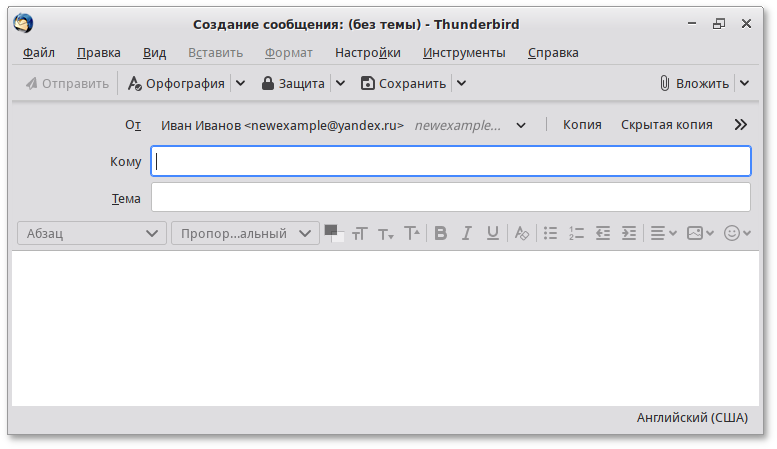
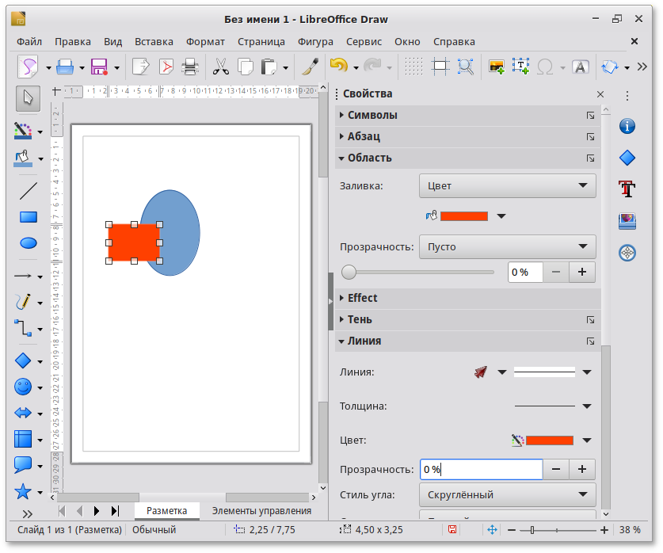
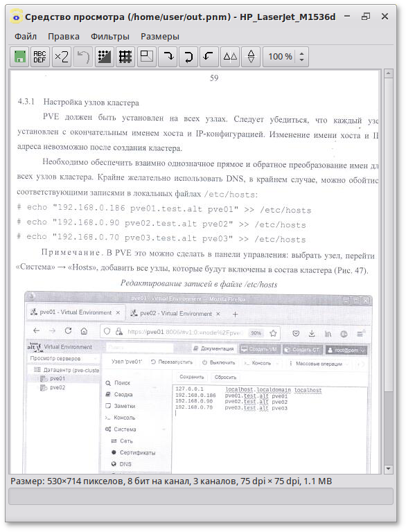
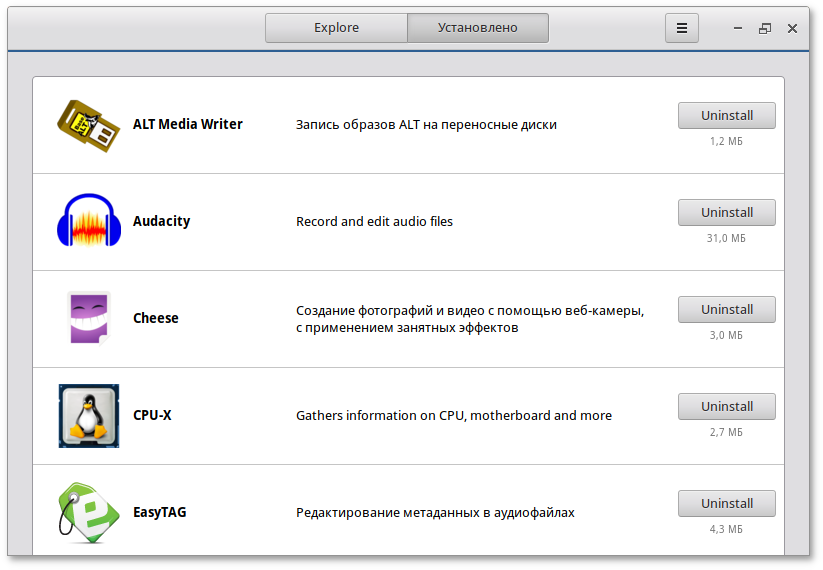
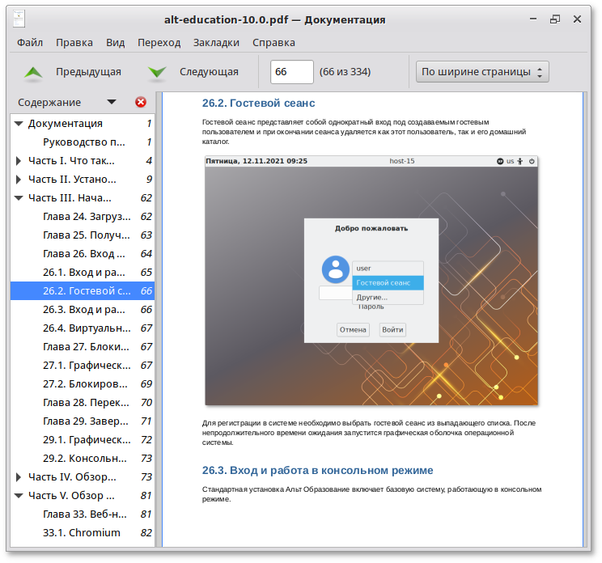

Simply Linux 10.1
Руководство пользователя
Редакция июль, 2022
Аннотация
Добро пожаловать в документацию дистрибутива Simply Linux (Симпли Линукс). Данное руководство предназначено как для начинающих, так и для опытных пользователей. Руководство описывает подготовку системы для установки, процесс установки дистрибутива, а также процедуру настройки и использования системы.
Названия компаний и продуктов, встречающихся в руководстве, могут являться торговыми знаками соответствующих компаний.
Данное руководство соответствует текущему состоянию сведений, но какие-либо окончательные правки могли не попасть в него. В случае обнаружения ошибок и неточностей в руководство вносятся изменения. Актуальная версия руководства в формате HTML со всеми текущими изменениями и дополнениями размещена на сайте с документацией компании «Базальт СПО» http://docs.altlinux.org/.
3.3. Что такое десятая платформа
3.3.1. Основные новшества в десятой платформе
4. Подготовка установочного диска
4.1. Запись образа ISO дистрибутива на DVD
4.1.1. Запись образа диска под операционной системой MS Windows
4.1.2. Запись образа диска под операционной системой Linux
4.2. Запись установочного образа на USB Flash
4.2.1. В операционной системе Windows
4.2.2. В операционной системе Linux
4.2.3. В операционной системе OS X
4.2.4. Проверка целостности записанного образа
5. Сохранение данных и меры предосторожности
6. Начало установки: загрузка системы
7. Последовательность установки
11.1. Выбор профиля разбиения диска
11.2. Автоматические профили разбиения диска
11.3. Ручной профиль разбиения диска
11.4. Дополнительные возможности разбиения диска
11.4.1. Создание программного RAID-массива
11.4.3. Создание шифрованных разделов
11.4.4. Особенности подготовки диска в UEFI-режиме
12.1. Дополнительные приложения
18. Установка пароля на шифрованные разделы
20. Обновление системы до актуального состояния
21.1. Проблемы при установке системы
21.2. Проблемы с загрузкой системы
III. Начало использования Симпли Линукс
23. Получение доступа к зашифрованным разделам
25. Блокирование сеанса доступа
32.1.1. Первоначальная настройка Thunderbird
32.1.2. Использование почтового клиента
33. Обмен мгновенными сообщениями
33.1.1. Первоначальная настройка
35.1. Обзор файлового менеджера Thunar
35.1.2. Копирование и перемещение файлов
35.1.5. Использование сменных носителей
36.2.2. Фильтрация и синтез изображений
36.3. Менеджер фотографий Shotwell
36.4. Векторный редактор Inkscape
36.5. Программа сканирования и распознавания gImageReader
37.2. Запись и редактирование звука: Audacity
37.2.2. Импорт и экспорт звуковых данных
37.2.8. Свобода использования и многоплатформенность
37.4. Запись/трансляция видео: OBS Studio
38.2. Установка сторонних приложений с официальных сайтов
38.4. Текстовый редактор Mousepad
38.5. Просмотрщик документов Atril
39.2. Применение центра управления системой
39.3. Запуск Центра управления системой в графической среде
41. Установка принтера в Simply Linux
42. Настройка сканера подключенного к USB-порту
42.2. Интерфейсы для сканирования (frontend)
VII. Установка дополнительного программного обеспечения
44. Установка дополнительного ПО
44.2. Центр управления системой
44.3. Программа управления пакетами Synaptic
45.1. Программа управления пакетами Synaptic
46.1. Обновление всех установленных пакетов
VIII. Основы администрирования Linux
47.1.1. Процессы функционирования ОС
47.1.4. Организация файловой структуры
47.1.5. Имена дисков и разделов
47.1.6. Разделы, необходимые для работы ОС
47.2. Работа с наиболее часто используемыми компонентами
47.2.2. Командные оболочки (интерпретаторы)
47.2.3. Командная оболочка Bash
47.2.7. Обзор основных команд системы
47.3. Стыкование команд в системе Linux
47.3.1. Стандартный ввод и стандартный вывод
47.3.2. Перенаправление ввода и вывода
47.3.3. Использование состыкованных команд
47.3.4. Недеструктивное перенаправление вывода
48.1. Какие бывают пользователи?
48.2. Для чего может понадобиться режим суперпользователя?
48.3. Как получить права суперпользователя?
48.4. Как перейти в режим суперпользователя?
IX. Техническая поддержка продуктов Базальт СПО
49. Покупателям нашей продукции
50. Пользователям нашей продукции
Часть I. Что такое Simply Linux?
В этой части рассматривается что такое Linux, дистрибутивы Альт и Simply Linux.
Содержание
3.3. Что такое десятая платформа
3.3.1. Основные новшества в десятой платформе
Глава 1. Что такое Симпли Линукс
Simply Linux (Симпли Линукс) — это простая в установке и удобная в работе операционная система, дающая возможность пользователю решать все повседневные задачи, не опасаясь вирусов и не затрачивая время на поиск необходимых программ в сети Интернет и на полках магазинов. Simply Linux — это операционная система для каждого из вас. Она легка в использовании, не требовательна к ресурсам вашего компьютера, функциональна и надёжна.
Проект Simply Linux — адаптированная для обычного пользователя операционная система Linux. Под «обычным пользователем» понимается человек, не владеющий тонкостями настройки и использования системы. Идея проекта Simply Linux — заинтересовать пользователя свободным программным обеспечением, показав комфорт и удобство в работе с ним.
С Simply Linux вы приобретаете простоту в освоении, продуктивность в использовании и оперативную поддержку команды разработчиков.
Мы стараемся ориентироваться, прежде всего, на вас: выбирать самые лучшие программы, отвечать на любые вопросы по работе системы, писать самые подробные инструкции, в максимально короткие сроки исправлять ошибки и совершенствовать Simply Linux в сторону ещё большего удобства и функциональности.
Simply Linux доступен также в формате LiveCD. При загрузке системы Simply Linux в режиме LiveCD работа осуществляется непосредственно с DVD диска, не затрагивая установленную на жёстком диске ОС. Режим LiveCD позволяет быстро начать работу с компьютером, избегая длительного процесса установки ОС в постоянную память.
Примечание
В названии ISO-образа Simply Linux LiveCD присутствует слово live: slinux-live-10.1-x86_64.iso.
В режиме LiveCD вы можете пользоваться Интернетом и электронной почтой, просматривать изображения и даже редактировать их, создавать и редактировать документы с помощью приложений, входящих в состав Simply Linux.
Предупреждение
Для того чтобы не потерять выполненную работу во время сеанса работы в режиме LiveCD при необходимости выключения или перезапуска компьютера, сохраните её на жёстком диске или flash-накопителе.
Доступ к файлам на жёстком диске компьютера во время сеанса работы в режиме LiveCD можно получить с помощью файлового менеджера.
Операционная система (далее — ОС) Linux — ядро, основные компоненты системы и большинство её пользовательских приложений — свободные программы. Свободные программы можно:
Свобода программ обеспечила их широкое использование и интерес к ним со стороны тысяч разработчиков. Основные программы для Linux выходят под лицензией GNU General Public License (далее — GPL). Лицензия GNU не только гарантирует свободу, но и защищает её. Она допускает дальнейшее распространение программ только под той же лицензией, поэтому исходный код ядра Linux, компиляторов, библиотеки glibc, пользовательских графических оболочек не может быть использован для создания приложений с закрытым кодом. В этом принципиальное отличие Linux от свободных ОС семейства BSD (FreeBSD, NetBSD, OpenBSD), фрагменты которых вошли в Microsoft Windows и даже стали основой OS X. Linux включает в себя многие разработки BSD, но его компиляторы и системные библиотеки разработаны в рамках проекта GNU (http://www.gnu.org/home.ru.html).
В отличие от распространённых несвободных ОС, Linux не имеет географического центра разработки. Нет фирмы, которая владела бы этой ОС, нет и единого координационного центра. Программы для Linux — результат работы тысяч проектов. Большинство из них объединяет программистов из разных стран, связанных друг с другом только перепиской. Лишь некоторые проекты централизованы и сосредоточены в фирмах. Создать свой проект или присоединиться к уже существующему может любой программист, и, в случае успеха, результаты этой работы станут известны миллионам пользователей. Пользователи принимают участие в тестировании свободных программ, общаются с разработчиками напрямую. Это позволяет за короткий срок добавлять в программное обеспечение новые возможности, оперативно находить ошибки и исправлять их.
Именно гибкая и динамичная система разработки, невозможная для проектов с закрытым кодом, определяет исключительную экономическую эффективность Linux. Низкая стоимость свободных разработок, отлаженные механизмы тестирования и распространения, привлечение независимых специалистов, обладающих индивидуальным, самостоятельным видением проблем, защита исходного текста программ лицензией GPL — всё это стало причиной успеха свободных программ.
Такая высокая эффективность разработки не могла не заинтересовать крупные фирмы. Они стали создавать свои свободные проекты, основывающиеся на тех же принципах. Так появились Mozilla, LibreOffice, свободный клон Interbase, SAP DB. IBM способствовала переносу Linux на свои мейнфреймы.
Открытый код программ значительно снизил себестоимость разработки закрытых систем для Linux и позволил снизить цену решения для пользователя. Вот почему Linux стала платформой, часто рекомендуемой для таких продуктов, как Oracle, DB2, Informix, Sybase, SAP ERP, Lotus Domino.
ОС Linux унаследовала от UNIX надёжность и отличную систему защиты. Система разграничения доступа к файлам позволяет не бояться вирусов. Но всё же, программ без ошибок не бывает, и Linux не исключение. Благодаря открытости исходного кода программ, аудит системы может осуществить любой специалист без подписок о неразглашении и без необходимости работы в стенах нанявшей его компании. Сообщества разработчиков и пользователей свободных программ создали множество механизмов оповещения об ошибках и их исправления. Сообщить об ошибке и принять участие в её исправлении независимому программисту или пользователю так же просто, как специалисту фирмы-разработчика или автору проекта. Благодаря этому ошибки защиты эффективно выявляются и быстро исправляются.
Большинство пользователей для установки Linux используют дистрибутивы. Дистрибутив — это не просто набор программ, а готовое решение для выполнения различных задач пользователя, обладающее идентичностью установки, управления, обновления, а также едиными системами настройки и поддержки.
Linux — самостоятельная операционная система. Все операционные системы разные: Linux — не Windows, не OS X и не FreeBSD. В Linux свои правила, их необходимо изучить и к ним необходимо привыкнуть. Терпение и настойчивость в изучении Linux обернётся значительным повышением эффективности и безопасности вашей работы. То, что сегодня кажется странным и непривычным, завтра понравится и станет нормой.
Не стесняйтесь задавать вопросы, ведь самый простой способ найти ответ — совет опытного специалиста. Взаимопомощь и общение — традиция в мире Linux. Всегда можно обратиться за помощью к сообществу пользователей и разработчиков Linux. Большинство вопросов повторяются, поэтому для начала стоит поискать ответ на свой вопрос в документации, затем в сети Интернет. Если вы не нашли ответа в перечисленных источниках, не стесняйтесь, пишите на форум или в списки рассылки так, как писали бы своим друзьям, и вам обязательно помогут.
Глава 3. Что такое системы Альт
3.3. Что такое десятая платформа
3.3.1. Основные новшества в десятой платформе
Команда ALT Linux (http://www.altlinux.org/ALT_Linux_Team) — это интернациональное сообщество, насчитывающее более 200 разработчиков свободного программного обеспечения.
Sisyphus (https://packages.altlinux.org) — наш ежедневно обновляемый банк программ (часто называемый репозиторий). На его основе создаются все дистрибутивы ALT. Поддерживаемая ALT Linux Team целостность Sisyphus, оригинальная технология сборки программ, утилита apt-get и её графическая оболочка synaptic позволяют пользователям легко обновлять свои системы и быть в курсе актуальных новостей мира свободных программ.
Ежедневно изменяющийся репозиторий содержит самое новое программное обеспечение со всеми его преимуществами и недостатками (иногда ещё неизвестными). Поэтому, перед обновлением вашей системы из Sisyphus, мы советуем взвесить преимущества новых возможностей, реализованных в последних версиях программ, и вероятность возникновения неожиданностей в работе с ними (http://www.altlinux.org/Sisyphus_changes).
Разработка Sisyphus полностью доступна. У нас нет секретных изменений кода и закрытого тестирования с подписками о неразглашении. То, что мы сделали сегодня, завтра вы найдёте в сети. По сравнению с другими аналогичными банками программ (Debian unstable, Mandriva Cooker, PLD, Fedora), в Sisyphus есть немало самобытного. Особое внимание уделяется защите системы, локализации на русский язык, полноте и корректности зависимостей.
Название Sisyphus (Сизиф) заимствовано из греческой мифологии. С кропотливым Сизифом, непрерывно закатывающим в гору камни, команду ALT Linux Team объединяет постоянная работа над усовершенствованием технологий, заложенных в репозиторий.
Sisyphus, в первую очередь, — открытая лаборатория решений. Если вам это интересно, если вы хотите дополнить Sisyphus новыми решениями, если вы считаете, что можете собрать какую-то программу лучше — присоединяйтесь к проекту ALT Linux Team (http://www.altlinux.org/Join).
3.3. Что такое десятая платформа
Как уже говорилось ранее, Sisyphus является часто обновляемым репозиторием, скорее предназначенным для разработчиков. Решением для тех пользователей, которым стабильность и предсказуемость работы системы важнее расширенной функциональности (а это в первую очередь начинающие и корпоративные пользователи), являются стабильные дистрибутивы Альт. Такие стабильные дистрибутивы базируются на стабильном срезе репозитория Sisyphus. Эти срезы называются платформами.
Десятая платформа (p10) была создана в июле 2021 года и её поддержка продлится до июля 2024.
3.3.1. Основные новшества в десятой платформе
Часть II. Установка дистрибутива
В этой части рассматривается процесс установки дистрибутива.
Содержание
4. Подготовка установочного диска
4.1. Запись образа ISO дистрибутива на DVD
4.1.1. Запись образа диска под операционной системой MS Windows
4.1.2. Запись образа диска под операционной системой Linux
4.2. Запись установочного образа на USB Flash
4.2.1. В операционной системе Windows
4.2.2. В операционной системе Linux
4.2.3. В операционной системе OS X
4.2.4. Проверка целостности записанного образа
5. Сохранение данных и меры предосторожности
6. Начало установки: загрузка системы
7. Последовательность установки
11.1. Выбор профиля разбиения диска
11.2. Автоматические профили разбиения диска
11.3. Ручной профиль разбиения диска
11.4. Дополнительные возможности разбиения диска
11.4.1. Создание программного RAID-массива
11.4.3. Создание шифрованных разделов
11.4.4. Особенности подготовки диска в UEFI-режиме
12.1. Дополнительные приложения
18. Установка пароля на шифрованные разделы
20. Обновление системы до актуального состояния
21.1. Проблемы при установке системы
21.2. Проблемы с загрузкой системы
Глава 4. Подготовка установочного диска
4.1. Запись образа ISO дистрибутива на DVD
4.1.1. Запись образа диска под операционной системой MS Windows
4.1.2. Запись образа диска под операционной системой Linux
4.2. Запись установочного образа на USB Flash
4.2.1. В операционной системе Windows
4.2.2. В операционной системе Linux
4.2.3. В операционной системе OS X
4.2.4. Проверка целостности записанного образа
Наиболее частый способ установки операционной системы на компьютер представляет собой установку с установочного DVD-диска. В этой главе описываются различные способы записи дистрибутива на DVD-диск.
Установочные образы являются гибридными, что позволяет производить установку, записав такой образ на USB Flash. О записи установочного образа на USB Flash также рассказано в этой главе.
4.1. Запись образа ISO дистрибутива на DVD
4.1.1. Запись образа диска под операционной системой MS Windows
Файл ISO-образа диска — это файл специального формата, подготовленный для записи на диск. Для записи ISO-образа под операционной системой MS Windows используйте специальные программы: SCDWriter, Nero BurningROM и другие. Рекомендуем для записи использовать новые диски от известных производителей, таких как: Verbatim, TDK. Записанный на плохой диск образ может вызвать неразрешимые проблемы при установке.
4.1.1.1. Запись образа диска с помощью Small CD-Writer
Весь процесс записи установочного диска при помощи Small CD-Writer состоит из следующих шагов:
4.1.1.2. Запись образа диска с помощью Nero BurningROM
Процесс записи установочного диска при помощи Nero BurningROM состоит из следующих шагов:
4.1.2. Запись образа диска под операционной системой Linux
Для записи ISO-образов можно использовать множество утилит и программ с графическим или текстовым интерфейсом. Наиболее удобно использовать программы K3b или Brasero, которые поставляются в комплекте любого дистрибутива операционной системы Linux.
4.1.2.1. Запись образа диска с помощью K3b
Весь процесс записи установочного диска при помощи K3b состоит из следующих шагов:
4.2. Запись установочного образа на USB Flash
Предупреждение
Запись образа дистрибутива на flash-диск приведёт к изменению таблицы разделов на носителе, таким образом, если flash-диск выполнил функцию загрузочного\установочного устройства и требуется вернуть ей функцию переносного накопителя данных, то необходимо удалить все имеющиеся разделы на flash-диске и создать нужное их количество заново.
Для восстановления совместимости flash-диска с операционными системами семейства Windows может понадобиться также пересоздание таблицы разделов (например, при помощи parted). Нужно удалить таблицу GPT и создать таблицу типа msdos. Кроме того, должен быть только один раздел с FAT или NTFS.
Как и при записи DVD-диска вам потребуется ISO-образ установочного диска.
4.2.1. В операционной системе Windows
Для создания загрузочного flash-диска под операционной системой MS Windows используйте специальные программы: ALT Media Writer, Win32 Disk Imager, HDD Raw Copy Tool и другие.
ALT Media Writer — это инструмент, который помогает записывать образы ALT на портативные накопители, такие как flash-диски. Он может автоматически загружать образы из интернета и записывать их. Для записи образа на flash-диск необходимо:
начнётся загрузка образа из интернета;
Инструкция для записи образа в программе Win32 Disk Imager:
Инструкция для записи образа в программе HDD Raw Copy Tool:

Предупреждение
Будьте внимательны при указании имени usb-устройства — запись образа по ошибке на свой жёсткий диск приведёт к почти гарантированной потере данных на нём!
И, наконец, после проверки правильности выбранных параметров и нажатия кнопки Continue можно приступать к записи, нажав следом кнопку START. По успешному завершению записи окно с индикацией процесса записи закроется, после чего можно закрыть и окно самой программы.
4.2.2. В операционной системе Linux
Для записи образа на flash-диск можно воспользоваться одной из программ с графическим интерфейсом:
ALT Media Writer может автоматически загружать образы из интернета и записывать их, при необходимости извлекая сжатые образы (img.xz).
Для записи установочного образа можно воспользоваться утилитой командной строки dd:
dd oflag=direct if=<файл-образа.iso> of=/dev/sdX bs=1M
sync
где <файл-образа.iso> — образ диска ISO, а /dev/diskX — устройство, соответствующее flash-диску.
Для удобства показа прогресса записи можно установить пакет pv и использовать команду:
pv <файл-образа.iso> | dd oflag=direct of=/dev/sdX bs=1M;sync
где <файл-образа.iso> — образ диска ISO, а /dev/diskX — устройство, соответствующее flash-диску.
Просмотреть список доступных устройств можно командой lsblk или (если такой команды нет): blkid.
Например, так можно определить имя flash-диска:
$ lsblk | grep disk
sda 8:0 0 931,5G 0 disk
sdb 8:16 0 931,5G 0 disk
sdc 8:32 1 7,4G 0 disk
flash-диск имеет имя устройства sdc.
Затем записать:
# pv /iso/slinux-10.1-x86_64.iso | dd oflag=direct of=/dev/sdc bs=1M;sync
dd: warning: partial read (524288 bytes); suggest iflag=fullblock
3GiB 0:10:28 [4,61MiB/s] [===================================> ] 72% ETA 0:04:07
Предупреждение
Будьте внимательны при указании имени usb-устройства — запись образа по ошибке на свой жёсткий диск приведёт к почти гарантированной потере данных на нём!
Предупреждение
Не добавляйте номер раздела, образ пишется на flash-диск с самого начала!
Предупреждение
Не извлекайте flash-диск, пока образ не запишется до конца! Определить финал процесса можно по прекращению моргания индикатора flash-диска либо посредством виджета "Безопасное извлечение съемных устройств". В консоли можно подать команду
eject /dev/sdX
и дождаться ее успешного завершения.
4.2.3. В операционной системе OS X
В операционной системе OS X для создания загрузочного flash-диска можно использовать команду:
sudo dd if=slinux-10.1-x86_64.iso of=/dev/diskX bs=1M
sync
где slinux-10.1-x86_64.iso — образ диска ISO, а /dev/diskX — flash-диск. Просмотреть список доступных устройств можно командой:
diskutil list
Предупреждение
Будьте внимательны при указании имени usb-устройства — запись образа по ошибке на свой жёсткий диск приведёт к почти гарантированной потере данных на нём!
4.2.4. Проверка целостности записанного образа
Предупреждение
Внимание! Если речь идёт о записи на flash-диск образа LiveCD, проверка должна быть выполнена сразу же после записи на USB Flash, без запуска с него. Причина в том, что остаток flash-диска, при первом запуске LiveCD, форматируется, как r/w раздел, при этом меняется и таблица разделов.
Для проверки целостности записанного образа необходимо выполнить следующие шаги:
$ du -b slinux-10.1-x86_64.iso | cut -f1
4696213504
$ md5sum slinux-10.1-x86_64.iso
d11812a1e7bde5d5cf4ccbb60f9b7f19 slinux-10.1-x86_64.iso
# head -c 4696213504 /dev/sdd | md5sum
d11812a1e7bde5d5cf4ccbb60f9b7f19
где размер после -c — вывод в п.1, а /dev/sdd — устройство DVD или USB Flash, на которое производилась запись.
Глава 5. Сохранение данных и меры предосторожности
Если вы хотите установить ОС Simply Linux и при этом сохранить уже установленную на вашем компьютере операционную систему (например, другую версию GNU/Linux или Microsoft Windows), вам нужно обязательно позаботиться о подготовке компьютера к установке второй системы и о сохранении ценных для вас данных.
Если у вас нет загрузочного диска для уже установленной системы, создайте его. В случае прерванной установки ОС Simply Linux или неправильной настройки загрузчика, вы можете потерять возможность загрузиться в вашу предыдущую ОС.
Если на диске, выбранном для установки ОС Simply Linux, не осталось свободного раздела, то программа установки должна будет изменить размер существующего раздела. От этой операции могут пострадать ваши данные, поэтому предварительно надо сделать следующие действия:
Предупреждение
Полной гарантией от проблем, связанных с потерей данных, является резервное копирование!
Глава 6. Начало установки: загрузка системы
Для того чтобы начать установку ОС Simply Linux, достаточно загрузиться с носителя, на котором записан дистрибутив.
Примечание
Предварительно следует включить в BIOS опцию загрузки с оптического привода или с USB-устройства.
В большинстве случаев указание способа входа в BIOS отображается на вашем мониторе непосредственно после включения компьютера. Способ входа в меню BIOS и информация о расположении настроек определяется производителем используемого оборудования. За информацией можно обратиться к документации на ваше оборудование.
После загрузки компьютера с установочного диска выводится меню, в котором можно выбрать варианты загрузки системы:
[root@localhost /]#
Примечание
Начальный загрузчик EFI:
Пункт UEFI Firmware Settings — позволяет получить доступ к настройкам UEFI.
Примечание
Мышь на этом этапе установки не поддерживается. Для выбора опций установки и различных вариантов необходимо использовать клавиатуру.
Нажатием клавиши E можно вызвать редактор параметров текущего пункта загрузки. Если система настроена правильно, то редактировать их нет необходимости.
Сочетание клавиш Ctrl+Alt+F1 — выдает технические сведения о выполнении процесса установки ОС Симпли Линукс.
Чтобы начать процесс установки, нужно клавишами перемещения курсора вверх и вниз, выбрать пункт меню Установить Simply Linux 10.1, и нажать Enter. Начальный этап установки не требует вмешательства пользователя: происходит автоматическое определение оборудования и запуск компонентов программы установки. Сообщения о происходящем на данном этапе можно просмотреть, нажав клавишу ESC.
Примечание
В начальном загрузчике установлено небольшое время ожидания: если в этот момент не предпринимать никаких действий, то будет загружена та система, которая уже установлена на жестком диске. Если вы пропустили нужный момент, перезагрузите компьютер и вовремя выберите пункт Установить Simply Linux 10.1.
Глава 7. Последовательность установки
До того как будет произведена установка базовой системы на жёсткий диск, программа установки работает с образом системы, загруженным в оперативную память компьютера.
Если инициализация оборудования завершилась успешно, будет запущен графический интерфейс программы-установщика. Процесс установки разделён на шаги. Каждый шаг посвящён настройке или установке определённого свойства системы. Шаги нужно проходить последовательно. Переход к следующему шагу происходит по нажатию кнопки Далее. При помощи кнопки Назад, при необходимости, можно вернуться к уже пройденному шагу и изменить настройки. Однако возможность перехода к предыдущему шагу ограничена теми шагами, в которых нет зависимости от данных, введённых ранее.
Если по каким-то причинам возникла необходимость прекратить установку, необходимо нажать кнопку <Reset> на корпусе системного блока компьютера.
Примечание
Совершенно безопасно выполнить отмену установки только до шага «Подготовка диска», поскольку до этого момента не производится никаких изменений на жёстком диске. Если прервать установку между шагами «Подготовка диска» и «Установка загрузчика», существует вероятность, что после этого с жёсткого диска не сможет загрузиться ни одна из установленных систем (если такие имеются).
Технические сведения о ходе установки можно посмотреть, нажав Ctrl+Alt+F1, вернуться к программе установки — Ctrl+Alt+F7. По нажатию Ctrl+Alt+F2 откроется отладочная виртуальная консоль.
Каждый шаг сопровождается краткой справкой, которую можно вызвать, щёлкнув кнопку Справка, или нажав клавишу F1.
Во время установки системы выполняются следующие шаги:
Установка Simply Linux начинается с выбора основного языка — языка интерфейса программы установки и устанавливаемой системы. В списке, помимо доступных языков региона (выбранного на этапе начальной загрузки), указан и английский язык.
На этом же этапе выбирается вариант переключения раскладки клавиатуры. Раскладка клавиатуры — это привязка букв, цифр и специальных символов к клавишам на клавиатуре. Помимо ввода символов на основном языке, в любой системе Linux необходимо иметь возможность вводить латинские символы (имена команд, файлов и т.п.). Для этого обычно используется стандартная английская раскладка клавиатуры. Переключение между раскладками осуществляется при помощи специально зарезервированных для этого клавиш. Для русского языка доступны следующие варианты переключения раскладки:
Если выбранный основной язык имеет всего одну раскладку (например, при выборе английского языка в качестве основного), эта единственная раскладка будет принята автоматически.
Глава 9. Лицензионный договор

Перед продолжением установки следует внимательно прочитать условия лицензии. В лицензии говорится о ваших правах. В частности, за вами закрепляются права на:
Если вы приобрели дистрибутив, то данное лицензионное соглашение прилагается в печатном виде к вашей копии дистрибутива. Лицензия относится ко всему дистрибутиву Simply Linux. Если вы согласны с условиями лицензии, отметьте пункт Да, я согласен с условиями и нажмите Далее.
На данном этапе выполняется выбор страны и города, по которым будет определен часовой пояс и установлены системные часы.
Для корректной установки даты и времени достаточно правильно указать часовой пояс и выставить желаемые значения для даты и времени.
На этом шаге следует выбрать часовой пояс, по которому нужно установить часы. Для этого в соответствующих списках выберите страну, а затем регион. Поиск по списку можно ускорить, набирая на клавиатуре первые буквы искомого слова.
Пункт Хранить время в BIOS по Гринвичу выставляет настройки даты и времени в соответствии с часовыми поясами, установленными по Гринвичу, и добавляет к местному времени часовую поправку для выбранного региона.
После выбора часового пояса будут предложены системные дата и время по умолчанию.
Для ручной установки текущих даты и времени нужно нажать кнопку Изменить…. Откроется окно ручной настройки системных параметров даты и времени.
Для синхронизации системных часов (NTP) с удаленным сервером по локальной сети или по сети Интернет нужно отметить пункт Получать точное время с NTP-сервера и указать предпочитаемый NTP-сервер. В большинстве случаев можно указать сервер pool.ntp.org.
Если выбрана опция Получать точное время с NTP-сервера, то компьютер может и сам быть сервером точного времени. Например, использоваться как сервер точного времени машинами локальной сети. Для активации этой возможности необходимо отметить пункт Работать как NTP-сервер.
Для сохранения настроек и продолжения установки системы в окне ручной установки даты и времени необходимо нажать кнопку ОК и затем в окне Дата и время нажать кнопку Далее.
Примечание
В случае если ОС Simply Linux устанавливается как вторая ОС, необходимо снять отметку с пункта Хранить время в BIOS по Гринвичу, иначе время в уже установленной ОС может отображаться некорректно.
11.1. Выбор профиля разбиения диска
11.2. Автоматические профили разбиения диска
11.3. Ручной профиль разбиения диска
11.4. Дополнительные возможности разбиения диска
11.4.1. Создание программного RAID-массива
11.4.3. Создание шифрованных разделов
11.4.4. Особенности подготовки диска в UEFI-режиме
На этом этапе подготавливается площадка для установки Simply Linux, в первую очередь — выделяется свободное место на диске.
Переход к этому шагу может занять некоторое время. Время ожидания зависит от производительности компьютера, объёма жёсткого диска, количества разделов на нём и т.п.
11.1. Выбор профиля разбиения диска
После завершения первичной конфигурации загрузочного носителя откроется окно Подготовка диска. В списке разделов перечислены уже существующие на жёстких дисках разделы (в том числе здесь могут оказаться съёмные flash-диски, подключённые к компьютеру в момент установки).
В списке Выберите метод установки перечислены доступные профили разбиения диска. Профиль — это шаблон распределения места на диске для установки ОС. Можно выбрать один из профилей:
Первые два профиля предполагают автоматическое разбиение диска.
11.2. Автоматические профили разбиения диска
Предупреждение
Будьте внимательны при использовании автоматических профилей разбиения дисков. Соответствующие изменения на диске происходят сразу же по нажатию кнопки Далее.
Примечание
Если при применении одного из профилей автоматического разбиения диска доступного места на диске окажется недостаточно, то на монитор будет выведено сообщение об ошибке: Невозможно создать все разделы, недостаточно места на диске.
Если данное сообщение появилось после попытки применить профиль Использовать неразмеченное пространство, то вы можете полностью очистить место на диске, применив профиль Удалить все разделы и создать разделы автоматически.
Если сообщение о недостатке места на диске появляется и при применении профиля Удалить все разделы и создать разделы автоматически, то это связано с недостаточным для использования автоматических методов разметки объёмом всего диска. В этом случае вы можете воспользоваться методом ручной разметки: профиль Подготовить разделы вручную.
Предупреждение
Будьте осторожны при применении профиля Удалить все разделы и создать разделы автоматически! В этом случае будут удалены все данные со всех дисков (включая внешние flash-диски) без возможности восстановления. Рекомендуется использовать эту возможность при полной уверенности в том, что диски не содержат никаких ценных данных.
При разбиении диска будут выделены отдельные разделы для подкачки и для корневой файловой системы.
11.3. Ручной профиль разбиения диска
При необходимости освободить часть дискового пространства следует воспользоваться профилем разбиения Подготовить разделы вручную. Можно удалить некоторые из существующих разделов или содержащиеся в них файловые системы. После этого можно создать необходимые разделы самостоятельно или вернуться к шагу выбора профиля и применить один из автоматических профилей. Выбор этой возможности требует знаний об устройстве диска и технологиях его разметки.
По нажатию Далее будет произведена запись новой таблицы разделов на диск и форматирование разделов. Только что созданные на диске программой установки разделы пока не содержат данных и поэтому форматируются без предупреждения. Уже существовавшие, но изменённые разделы, которые будут отформатированы, помечаются специальным значком в колонке Файловая система слева от названия. Если вы уверены в том, что подготовка диска завершена, подтвердите переход к следующему шагу нажатием кнопки Далее.
Не следует форматировать разделы с теми данными, которые вы хотите сохранить, например, со старыми пользовательскими данными (/home) или с другими операционными системами. Отформатировать можно любые разделы, которые вы хотите «очистить» (т.е. удалить все данные).
Предупреждение
Не уменьшайте NTFS-раздел с установленной Microsoft Windows Vista/Windows 7 средствами программы установки. В противном случае вы не сможете загрузить Microsoft Windows Vista/Windows 7 после установки Simply Linux. Для выделения места под установку Simply Linux воспользуйтесь средствами, предоставляемыми самой Microsoft Windows Vista/Windows 7: Управление дисками → Сжать.
11.4. Дополнительные возможности разбиения диска
Ручной профиль разбиения диска позволяет установить ОС на программный RAID-массив, разместить разделы в томах LVM и использовать шифрование на разделах. Данные возможности требуют от пользователя понимания принципов функционирования указанных технологий.
11.4.1. Создание программного RAID-массива
Избыточный массив независимых дисков RAID (redundant array of independent disks) — технология виртуализации данных, которая объединяет несколько НЖМД в логический элемент для избыточности и повышения производительности.
Примечание
Обратите внимание, что для создания программного RAID-массива потребуется минимум два жёстких диска.
Программа установки поддерживает создание программных RAID-массивов следующих типов:
Процесс подготовки к установке на RAID условно можно разбить на следующие шаги:
Для настройки параметров нового раздела из состава RAID-массива необходимо выбрать неразмеченный диск в окне профиля разбивки пространства Подготовить разделы вручную и нажать кнопку Создать раздел.
При создании разделов на жёстких дисках для последующего включения их в RAID-массивы следует указать Тип раздела для них равным Linux RAID:
В этом окне необходимо настроить следующие параметры:
Примечание
При создании разделов следует учесть, что объём результирующего массива может зависеть от размера, включённых в него разделов жёсткого диска. Например, при создании RAID 1, результирующий размер массива будет равен размеру минимального участника.
После создания разделов на дисках можно переходить к организации самих RAID-массивов. Для этого в списке следует выбрать пункт RAID, после чего нажать кнопку Создать RAID:
Далее мастер предложит выбрать тип массива:
И указать участников RAID-массива:
После создания RAID-массивов их можно использовать как обычные разделы на жёстких дисках, то есть, на них можно создавать файловые системы или же, например, включать их в LVM-тома.
Менеджер логических дисков LVM (Logical Volume Manager) — средство гибкого управления дисковым пространством, позволяющее создавать поверх физических разделов (либо неразбитых дисков) логические тома, которые в самой системе будут видны как обычные блочные устройства с данными (обычные разделы).
Процесс подготовки к установке на LVM условно можно разбить на следующие шаги:
Важно
Для создания группы томов LVM может потребоваться предварительно удалить существующую таблицу разделов с жёсткого диска.
Для настройки параметров нового раздела необходимо выбрать неразмеченный диск в окне профиля разбивки пространства Подготовить разделы вручную и нажать кнопку Создать раздел. При создании разделов на жёстких дисках для последующего включения их в LVM-тома следует указать Тип раздела для них равным Linux LVM:
После создания разделов на дисках можно переходить к созданию группы томов LVM. Для этого в списке следует выбрать пункт LVM, после чего нажать кнопку Создать группу томов:
В открывшемся окне необходимо выбрать разделы, которые будут входить в группу томов, указать название группы томов и выбрать размер экстента:
Примечание
Размер экстента представляет собой наименьший объем пространства, который может быть выделен тому. Размер экстента по умолчанию 65536 (65536*512 байт = 32 Мб, где 512 байт — размер сектора).
После создания группы томов LVM её можно использовать как обычный жёсткий диск, то есть внутри группы томов можно создавать тома (аналог раздела на физическом жёстком диске) и файловые системы внутри томов.
11.4.3. Создание шифрованных разделов
Программа установки позволяет создавать шифрованные разделы.
Процесс создания шифрованного раздела ничем не отличается от процесса создания обычного раздела и инициируется нажатием на кнопку Создать шифруемый раздел.
После создания шифрованного раздела мастер, как и при создании обычного раздела, предложит создать на нём файловую систему и при необходимости потребует указать точку монтирования.
Предупреждение
Установка загрузчика на шифрованный раздел не поддерживается.
Для сохранения всех внесенных настроек и продолжения установки в окне Подготовка диска нужно нажать кнопку Далее. Появится окно со списком настроенных разделов и их точек монтирования. Если вы уверены в том, что подготовка диска завершена, подтвердите переход к следующему шагу нажатием кнопки ОК.
11.4.4. Особенности подготовки диска в UEFI-режиме
Особенности разбиения диска:
Ручной профиль разбиения диска позволяет установить ОС на программный RAID-массив, разместить разделы в томах LVM и использовать шифрование на разделах.
Примечание
Для создания программного массива на GPT-разделах, следует сначала создать разделы типа basic data и не создавать на них том (снять отметку с пункта Создать том). Затем можно переходить к организации самих RAID-массивов, для этого в списке необходимо выбрать пункт RAID, после чего нажать кнопку Создать RAID.
12.1. Дополнительные приложения
На данном этапе происходит распаковка ядра и установка набора программ, необходимых для работы ОС Simply Linux.
12.1. Дополнительные приложения
Программа установки предлагает выбрать дополнительные пакеты программ, которые будут включены в состав ОС Simply Linux и установлены вместе с ней на диск.
В любом дистрибутиве Linux доступно значительное количество программ (до нескольких тысяч), часть из них составляет саму операционную систему, а остальные — это прикладные программы и утилиты.
В операционной системе Linux все операции установки и удаления производятся над пакетами — отдельными компонентами системы. Пакет и программа соотносятся неоднозначно: иногда одна программа состоит из нескольких пакетов, иногда один пакет включает несколько программ.
В процессе установки системы обычно не требуется детализированный выбор компонентов на уровне пакетов — это требует слишком много времени и знаний от проводящего установку. Тем более что комплектация дистрибутива подбирается таким образом, чтобы из имеющихся программ можно было составить полноценную рабочую среду для соответствующей аудитории пользователей. Поэтому, в процессе установки системы пользователю предлагается выбрать из небольшого списка групп пакетов, объединяющих пакеты, необходимые для решения наиболее распространённых задач.
Под списком групп на экране отображается информация об объёме дискового пространства, которое будет занято после установки пакетов, входящих в выбранные группы.
Опция Показать состав группы выводит список программных пакетов, входящих в состав той или иной группы пакетов:
На этом шаге вы можете выбрать список необходимых вам программ для установки. Выбрав необходимые группы, следует нажать Далее, после чего начнётся установка пакетов.
На этом этапе происходит установка набора программ, необходимых для работы системы.
Установка происходит автоматически в два этапа:
Получение пакетов осуществляется из источника, выбранного на этапе начальной загрузки. При сетевой установке (по протоколу FTP или HTTP) время выполнения этого шага будет зависеть от скорости соединения и может быть значительно большим в сравнении с установкой с лазерного диска.
Глава 13. Сохранение настроек
Начиная с данного этапа, программа установки работает с файлами только что установленной базовой системы. Все последующие изменения можно будет совершить после завершения установки посредством редактирования соответствующих конфигурационных файлов или при помощи модулей управления, включенных в дистрибутив.
По завершении установки базовой системы начинается шаг сохранения настроек. Он проходит автоматически и не требует вмешательства пользователя. На экране отображается индикатор выполнения.

На этом шаге производится перенос настроек, выполненных на первых шагах установки, в только что установленную базовую систему. Также производится запись информации о соответствии разделов жесткого диска смонтированным на них файловым системам (заполняется конфигурационный файл /etc/fstab).
После сохранения настроек осуществляется автоматический переход к следующему шагу.
Глава 14. Установка загрузчика
Загрузчик ОС — это программа, которая позволяет загружать Simply Linux другие ОС, если они установлены на данной машине.
Программа установки автоматически определяет, в каком разделе НЖМД следует располагать загрузчик для возможности корректного запуска ОС Simply Linux. Положение загрузчика, в случае необходимости, можно изменить в выпадающем списке Устройство, выбрав другой раздел.
Если же вы планируете использовать и другие ОС, уже установленные на этом компьютере, тогда имеет значение на каком жёстком диске или в каком разделе будет расположен загрузчик.
Для ограничения доступа к опциям загрузки можно установить пароль на загрузчик. Для этого необходимо отметить пункт Установить или сбросить пароль и, в появившихся полях для ввода, задать пароль.
Примечание
При необходимости изменения опций загрузки при старте компьютера потребуется ввести имя пользователя «boot» и заданный на этом шаге пароль.
Важно
При установке на EFI модуль установки загрузчика предложит вариант установить загрузчик в специальный раздел «EFI» (рекомендуется выбрать автоматическое разбиение на этапе разметки диска для создания необходимых разделов для загрузки с EFI):
Варианты установки загрузчика при установке в режиме EFI:
Выбор варианта установки загрузчика, зависит от вашего оборудования. Если не работает один вариант, попробуйте другие.
Для подтверждения выбора и продолжения работы программы установки необходимо нажать кнопку Далее.
На этом этапе необходимо задать параметры работы сетевой карты и настройки сети: IP-адреса сетевых интерфейсов, DNS-сервер, шлюз и т.п. Конкретные значения будут зависеть от используемого вами сетевого окружения. Ручного введения настроек можно избежать при наличии в сети настроенного DHCP-сервера. В этом случае все необходимые сетевые настройки будут получены автоматически.
Для сохранения настроек сети и продолжения работы программы установки необходимо нажать кнопку Далее.
Глава 16. Администратор системы
На данном этапе загрузчик создает учетную запись администратора. В открывшемся окне необходимо ввести пароль учетной записи администратора (root). Чтобы исключить опечатки при вводе пароля, пароль учетной записи вводится дважды.

Примечание
Чтобы увидеть пароль, который будет сохранен, нажмите на значок стрелки в поле ввода:
Для автоматической генерации пароля необходимо отметить пункт Создать автоматически. Система предложит пароль, сгенерированный автоматическим образом в соответствии с требованиями по стойкости паролей.
В любой системе Linux всегда присутствует один специальный пользователь — администратор системы, он же суперпользователь. Для него зарезервировано стандартное системное имя — root.
Администратор системы отличается от всех прочих пользователей тем, что ему позволено производить любые, в том числе самые разрушительные изменения в системе. Поэтому выбор пароля администратора системы — очень важный момент для безопасности. Любой, кто сможет ввести его правильно (узнать или подобрать), получит неограниченный доступ к системе. Даже ваши собственные неосторожные действия от имени root могут иметь катастрофические последствия для всей системы.
Важно
Стоит запомнить пароль root — его нужно будет вводить для получения права изменять настройки системы с помощью стандартных средств настройки Simply Linux. Более подробную информацию о режиме суперпользователя вы можете прочитать в главе Режим суперпользователя.
Подтверждение введенного (или сгенерированного) пароля учетной записи администратора (root) и продолжение работы программы установки выполняется нажатием кнопки Далее.
Глава 17. Системный пользователь
На данном этапе программа установки создает учетную запись системного пользователя (пользователя) ОС Simply Linux.
Помимо администратора (root) в систему необходимо добавить, по меньшей мере, одного обычного системного пользователя. Работа от имени администратора системы считается опасной, поэтому повседневную работу в Linux следует выполнять от имени ограниченного в полномочиях системного пользователя.
При добавлении системного пользователя предлагается ввести имя учётной записи пользователя. Имя учётной записи всегда представляет собой одно слово, состоящее только из строчных латинских букв (заглавные запрещены), цифр и символа подчёркивания «_» (причём цифра и символ «_» не могут стоять в начале слова).
Для того чтобы исключить опечатки, пароль пользователя вводится дважды. Пароль пользователя можно создать автоматически, по аналогии с автоматическим созданием пароля суперпользователя.
Для автоматической генерации пароля необходимо отметить пункт Создать автоматически. Система предложит пароль, сгенерированный автоматическим образом в соответствии с требованиями по стойкости паролей.
В процессе установки предлагается создать только одну учётную запись системного пользователя — от его имени можно выполнять задачи, не требующие привилегий суперпользователя. Учётные записи для всех прочих пользователей системы можно будет создать в любой момент после установки операционной системы.
Глава 18. Установка пароля на шифрованные разделы
Примечание
Если вы не создавали шифруемые разделы, то этот шаг пропускается автоматически. В этом случае сразу переходите к главе Завершение установки.
На этом этапе требуется ввести пароль для шифруемых разделов. Этот пароль потребуется вводить для того, чтобы получать доступ к информации на данных разделах.
Например, если вы зашифровали /home, то во время загрузки системы будет необходимо ввести пароль для этого раздела, иначе вы не сможете получить доступ в систему под своим именем пользователя.
Глава 19. Завершение установки
На экране последнего шага установки отображается информация о завершении установки Simply Linux.
После нажатия кнопки Завершить автоматически начнется перезагрузка системы.
Не забудьте извлечь установочный DVD (если это не происходит автоматически). Далее можно загружать установленную систему в обычном режиме.
Глава 20. Обновление системы до актуального состояния
После установки системы, её лучше сразу обновить до актуального состояния. Можно не обновлять систему и сразу приступать к работе только в том случае, если вы не планируете подключаться к сети или Интернету, не собираетесь устанавливать дополнительных программ.
Для обновления системы необходимо выполнить команды (с правами администратора):
# apt-get update
# apt-get dist-upgrade
# update-kernel
# apt-get clean
# reboot
Примечание
Получить права администратора можно, выполнив в терминале команду:
$ su -
или зарегистрировавшись в системе (например, на второй консоли Ctrl+Alt+F2) под именем root. Про режим суперпользователя можно почитать в главе Режим суперпользователя.
Примечание
Подробнее про обновление пакетов можно прочитать в главе Обновление системы.
21.1. Проблемы при установке системы
21.2. Проблемы с загрузкой системы
Важно
В случае возникновения каких-либо неприятностей не паникуйте, а спокойно разберитесь в сложившейся ситуации. Linux не так уж просто довести до полной неработоспособности и утраты ценных данных. Поспешные действия отчаявшегося пользователя могут привести к плачевным результатам. Помните, что решение есть, и оно обязательно найдётся!
21.1. Проблемы при установке системы
Важно
При возникновении проблем с UEFI или Legacy/CSM рекомендуется изменить выбор используемого вида прошивки на другой. Не следует выбирать режим смешанной загрузки Legacy/UEFI! Рекомендуется отключить всевозможные оптимизации и ускорение UEFI-загрузки, а также отключить на время установки SecureBoot.
Если в системе не произошла настройка какого-либо компонента после стадии установки пакетов, не отчаивайтесь, доведите установку до конца, загрузитесь в систему и попытайтесь в спокойной обстановке повторить настройку.
Нажатием клавиши E можно вызвать редактор параметров текущего пункта загрузки. В открывшемся редакторе следует найти строку, начинающуюся с linux$linux_suffix /boot/vmlinuz, в её конец дописать требуемые параметры, отделив пробелом и нажать F10.
В случае возникновения проблем с установкой, вы можете вручную задать необходимые параметры:
Если вы вообще не смогли установить систему (не произошла или не завершилась стадия установки пакетов), то сначала попробуйте повторить попытку в безопасном режиме. В безопасном режиме отключаются все параметры ядра, (apm=off acpi=off mce=off barrier=off vga=normal)) которые могут вызвать проблемы при загрузке. В этом режиме установка будет произведена без поддержки APIC. Возможно, у вас какое-то новое или нестандартное оборудование, но может оказаться, что оно отлично настраивается со старыми драйверами.
21.2. Проблемы с загрузкой системы
Если не загружается ни одна из установленных операционных систем, то значит, есть проблема в начальном загрузчике. Такие проблемы могут возникнуть после установки системы, в случае если загрузчик все-таки не установлен или установлен с ошибкой. При установке или переустановке Windows на вашем компьютере загрузчик Linux будет перезаписан в принудительном порядке, и станет невозможно запускать Linux.
Повреждение или перезапись загрузчика никак не затрагивает остальные данные на жёстком диске, поэтому в такой ситуации очень легко вернуть работоспособность: для этого достаточно восстановить загрузчик.
Если у вас исчез загрузчик другой операционной системы или другого производителя, то внимательно почитайте соответствующее официальное руководство на предмет его восстановления. Но в большинстве случаев вам это не потребуется, так как загрузчик, входящий в состав Симпли Линукс, поддерживает загрузку большинства известных операционных систем.
Для восстановления загрузчика достаточно любым доступным способом загрузить Linux и получить доступ к тому жёсткому диску, на котором находится повреждённый загрузчик. Для этого проще всего воспользоваться режимом LiveCD, который предусмотрен на установочном диске дистрибутива: пункт LiveCD (жёсткий диск не нужен).
В большинстве случаев для восстановления загрузчика можно просто воспользоваться командой fixmbr без параметров. Программа попытается переустановить загрузчик в автоматическом режиме.
Часть III. Начало использования Симпли Линукс
В этой части рассматривается загрузка установленной операционной системы и вход в среду рабочего стола.
Содержание
23. Получение доступа к зашифрованным разделам
25. Блокирование сеанса доступа
После включения компьютера на экране появляется меню, в котором перечислены возможные варианты загрузки операционных систем:
Примечание
При загрузке Simply Linux с LiveCD кроме прочих также доступны пункты:
Важно
При первом старте, в условиях установки нескольких ОС на один компьютер, возможно отсутствие в загрузочном меню пункта/пунктов с другой/другими операционными системами, они будут добавлены в список при последующей перезагрузке. Все перечисленные в меню после перезагрузки варианты могут быть загружены загрузчиком Linux.
Стрелками клавиатуры Вверх и Вниз выберите нужную операционную систему. Дополнительно к основным вариантам запуска ОС из этого меню можно загрузить Linux в безопасном режиме или запустить проверку памяти.
Загрузка операционной системы по умолчанию (первая в списке) начинается автоматически после небольшого времени ожидания (обычно несколько секунд). Нажав клавишу Enter, можно начать загрузку немедленно.
Нажатием клавиши E можно вызвать редактор параметров текущего пункта загрузки. Если система настроена правильно, то редактировать их нет необходимости.
Загрузка операционной системы может занять некоторое время, в зависимости от производительности компьютера. Основные этапы загрузки операционной системы — загрузка ядра, подключение (монтирование) файловых систем, запуск системных служб — периодически могут дополняться проверкой файловых систем на наличие ошибок. В этом случае время ожидания может занять больше времени, чем обычно. Подробную информацию о шагах загрузки можно получить, нажав клавишу Esc.
Глава 23. Получение доступа к зашифрованным разделам
В случае если был создан шифрованный раздел, потребуется вводить пароль при обращении к этому разделу.
Например, если был зашифрован домашний раздел /home, то для того, чтобы войти в систему, потребуется ввести пароль этого раздела и затем нажать Enter.
Важно
Если не ввести пароль за отведенный промежуток времени, то загрузка системы завершится ошибкой. В этом случае следует перезагрузить систему, нажав для этого два раза Enter, а затем Ctrl+Alt+Delete.
Стандартная установка Simply Linux включает графическую оболочку XFCE. Графическая оболочка состоит из набора различных программ и технологий, используемых для управления ОС и предоставляющих пользователю удобный графический интерфейс для работы в виде графических оболочек и оконных менеджеров.
При загрузке в графическом режиме работа загрузчика ОС заканчивается переходом к окну входа в систему.
Для регистрации в системе необходимо выбрать имя пользователя из выпадающего списка. Далее необходимо ввести пароль, затем нажать Enter или щелкнуть на кнопке Войти. После непродолжительного времени ожидания запустится графическая оболочка операционной системы.
Добавлять новых пользователей или удалять существующих можно после загрузки системы с помощью стандартных средств управления пользователями.
Если систему устанавливали не вы, то имя системного пользователя и его пароль вам должен сообщить системный администратор, отвечающий за настройку данного компьютера.
Важно
Поскольку работа в системе с использованием учётной записи администратора системы небезопасна, вход в систему в графическом режиме для суперпользователя root запрещён. Попытка зарегистрироваться в системе будет прервана сообщением об ошибке.
Глава 25. Блокирование сеанса доступа
После авторизации и загрузки графической рабочей среды Xfce, пользователю предоставляется рабочий стол для работы с графическими приложениями.
Если вы оставляете свой компьютер на короткое время, вы должны заблокировать свой экран, чтобы другие пользователи не могли получить доступ к вашим файлам или работающим приложениям.
Заблокировать сеанс доступа можно по запросу пользователя: Меню запуска приложений → Заблокировать экран (Ctrl+Alt+L):
Для разблокировки требуется ввести пароль пользователя и нажать кнопку Разблокировать:
При заблокированном экране другие пользователи могут входить в систему под своими учётными записями, нажав на экране ввода пароля кнопку Переключить пользователя.
Также при работе в графическом режиме блокирование сеанса доступа происходит после установленного времени бездействия (по умолчанию 5 минут) посредством срабатывания программы — хранителя экрана (screensaver).
Время бездействия системы устанавливается в диалоговом окне Параметры хранителя экрана, вызываемом из меню: Меню запуска приложений → Настройки → Диспетчер настроек → Хранитель экрана.
Если в системе одновременно работают несколько пользователей, то, для того чтобы переключиться с одного пользователя на другого необходимо в Меню запуска приложений нажать кнопку Сменить пользователя:
Откроется стандартное окно входа в систему.
Глава 27. Завершение работы ОС
Для завершения работы ОС необходимо перейти в Меню запуска приложений и нажать кнопку Выйти:
Далее откроется окно, в котором предоставляется выбор дальнейших действий:
Если отмечен пункт Сохранить сеанс, то менеджер сеанса запомнит какие приложения были запущены при выходе из системы и автоматически запустит их при входе в систему.
Xfce — это настольная рабочая среда, обеспечивающая пользователю комфортную работу с компьютером в графическом режиме. Xfce позволяет просто и быстро запускать приложения, оставаясь при этом очень нетребовательным к ресурсам. Таким образом, будучи внешне привлекательным и простым в использовании, Xfce может эффективно использоваться даже на относительно скромном оборудовании.
Содержание
Глава 28. Рабочий стол Xfce 4
На рабочем столе Xfce 4 есть две особых области. Сверху вниз:
Область рабочего стола включает в себя значки:
Примечание
Можно сразу удалить файл из системы, минуя корзину. Для этого необходимо одновременно с удалением файла зажать клавишу Shift.
При двойном щелчке по значку Домашний каталог запустится файловый менеджер с открытым домашним каталогом. При таком же действии по отношению к значку Корзина запустится файловый менеджер с открытой корзиной.
Щелчок правой кнопкой мыши на свободной области рабочего стола открывает контекстное меню рабочего стола, где вы можете, например, настроить фон рабочего стола (пункт Настройка рабочего стола…).
Панель Xfce расположена в нижней части экрана. Панель Xfce универсальна: она может содержать значки загрузчика, панели задач, переключатель окон или любое другое сочетание; и её можно удобно настроить. Для того чтобы увидеть возможные варианты настройки, необходимо щелчком правой кнопки мыши вызвать контекстное меню и переместить, удалить или изменить содержание вашей панели по форме и существу.
Панель Xfce имеет как вертикальный, так и горизонтальный режимы отображения, возможность автоматического скрытия с экрана, легко настраиваемые, всплывающие меню и ярлыки запуска приложений. Панель Xfce поддерживает прозрачность.
На левой части панели расположены:
На правой части панели находятся:
В центральной части панели расположена область списка задач, в которой отображаются запущенные приложения.
В левой части панели рабочего стола Xfce находится меню запуска приложений. Через Меню запуска приложений осуществляется запуск всех приложений, установленных на ваш компьютер.

Чтобы получить доступ к приложениям, достаточно щелкнуть левой кнопкой мыши по значку Меню запуска приложений, по умолчанию открывается раздел Избранное. В Избранное приложения добавляются/удаляются из контекстного меню, расположение значков можно изменить перетаскиванием.
Приложения в Меню запуска приложений могут быть просмотрены в виде общего списка Все приложения и по категориям, ведётся история запущенных приложений (десять последних запущенных приложений из меню), имеется функция поиска по списку приложений (поиск производится как по названию приложения, так и по его описанию).
Также в окне Меню запуска приложений присутствует строка из четырех быстрых ссылок, которые позволяют получить доступ к системным настройкам, блокировке экрана и управлению сессией.
Размер окна Меню запуска приложений можно изменить, для этого достаточно нажать и удерживать левую кнопку мыши на чёрном треугольнике в правом верхнем углу меню, после чего перетащить границу окна в требуемом направлении.
Диспетчер настроек находится в Меню запуска приложений в разделе Настройки. В диспетчере настроек объединены настройки различных компонентов Xfce. Они позволяют настроить Xfce под свои нужды.
Все приложения, входящие в состав диспетчера настроек, сопровождаются руководством пользователя. Каждое руководство содержит назначение, возможности и способы использования программы. Руководство вызывается из меню Справка в запущенном приложении.
Внешний вид Настройка пользовательского интерфейса предполагает выбор его общего стиля из списка имеющихся в системе стилей, переопределение системного шрифта для всех элементов интерфейса (кроме заголовка окон, шрифт для которых определяется в модуле Диспетчер окон), выбор внешнего вида значков, настройки стиля отображения текста и значков рабочего стола.
Диспетчер окон Модуль Диспетчер окон содержит основные настройки поведения окон. С помощью этой настройки пользователь может изменять стиль и фокус окон, задавать разнообразные дополнительные опции поведения окон. Здесь же находятся настройки сочетания горячих клавиш.
Диспетчер окон (дополнительно) Диспетчер окон (дополнительно) содержит дополнительные настройки поведения окон. В функции модуля входит: переключение окон, их размещение и их эффекты, настройка клавиши захвата окон и способы их перемещения, управление способами переключения рабочих мест.
Настройки менеджера буфера обмена Менеджер буфера обмена Clipman может обрабатывать текст и изображения и позволяет выполнять действия с определенным текстом, сопоставляя их с регулярными выражениями. Настройка менеджера буфера обмена позволяет задать размер журнала, синхронизировать основной буфер обмена (например, при выделении текста в поле) с буфером обмена по умолчанию (например, при выборе файла и нажатии кнопки копирования).
Настройки менеджера файлов Файловый менеджер Thunar — одна из основных программ повседневного использования. Настройки файлового менеджера Thunar очень разнообразны. У него простой и интуитивный интерфейс, не содержащий бесполезных или вносящих путаницу элементов. Thunar быстро запускается, быстро открывает папки и быстро реагирует на действия пользователя.
Настройки терминала Xfce Настройка терминала позволяет задать разделители окон или вкладок, выполнить настройку внешнего вида окна и вкладок терминала, настроить быстрые клавиши.
Оповещения В этом диалоговом окне можно настроить параметры отображения оповещений на вашем экране.
Панель Настройка панели позволяет выбрать размер, внешний вид, стиль и расположение панели. Также позволяет добавлять или удалять панели с рабочего стола. В параметрах этой настройки пользователь может добавлять на панель новые, несущие различную по содержанию информацию, элементы.
Параметры текстового редактора Mousepad — текстовый редактор по умолчанию для среды XFCE. С помощью этой настройки можно установить отступы табуляции, включить отображение нумерации строк, непечатаемых символов, подсветку строк, настроить окно программы.
Рабочие места Настройка рабочих мест позволяет задать, изменить количество рабочих мест и дать им собственные имена. Здесь же можно задать поля — области экрана, в которых невозможно размещать окна.
Рабочий стол Настройка рабочего стола содержит определение его цвета и стиля, а также установку обоев. Можно отредактировать главное меню, закрепить вызов главного меню, список столов и открытых на них приложений за правой и средней кнопками мыши.
Хранитель экрана Хранитель экрана — программа гашения экрана при простое компьютера, созданная для снижения непроизводительного износа оборудования, а также несущая энергосберегающие функции и функции безопасности, при условии присутствия в программе блокировки рабочей консоли паролем.
Bluetooth Модуль позволяет настроить подключение к стороннему устройству по Bluetooth.
Дисплей Модуль параметров дисплея автоматически определяет дисплеи и позволяет пользователям выбирать предпочтительные разрешение, частоту обновления и ориентацию дисплея.
Клавиатура Модуль располагает настройками поведения клавиатуры. Эта функция позволяет задать режим настройки ввода и курсора, горячие клавиши для запуска приложений и раскладку клавиатуры.
Менеджер питания Менеджер питания содержит общие параметры управления электропитанием. С помощью этого модуля пользователь может менять настройки DPMS.
Мышь и тачпад Модуль Мышь и тачпад содержит настройки курсора и режим его работы (левша/правша), настройки параметров обратной связи (ускорение и порог) и параметров двойного щелчка (время и расстояние), содержит выбор темы курсора: его размер и изображение.
Съёмные устройства и носители данных Данная функция позволяет настроить управление томами: накопителями, камерами, принтерами, устройствами ввода информации. Наличие в системе поддержки HAL и установки пакета thunar-volman-plugin расширяют возможности пользователя в использовании данной настройки.
Цветовые профили Данная функция позволяет настроить цветовые профили для принтеров и сканеров.
Приложения по умолчанию В данном модуле можно задавать разные приложения по умолчанию для открытия файлов разных форматов.
Сеансы и запуск Данная функция позволяет настроить параметры запуска рабочего стола и заставки. С помощью этого компонента пользователь может настроить автозапуск предпочитаемых приложений.
Специальные возможности Модуль специальных возможностей содержит настройки конфигурирования клавиатуры и мыши, настройки скорости срабатывания клавиш, чувствительность мыши и скорость повторного нажатия клавиш. С помощью этой настройки можно задать такие опции клавиатуры, как залипающие, медленные и повторяющиеся клавиши.
Редактор настроек Редактор настроек — программа, которая позволяет изменять различные настройки каналов.
Новые инструменты Xfce находятся в постоянной разработке см. https://www.xfce.org/projects.
Linux содержит огромное число приложений (программ) для выполнения всех повседневных задач. При этом важно понимать, что для выполнения одного и того же действия могут быть использованы разные приложения. Например, для написания простых текстов доступен целый ряд текстовых редакторов с разным набором возможностей. Со временем вы сами сможете выбрать наиболее удобные для вас приложения.
Набор программ с диска покрывает обычные потребности. Если же определённая программа отсутствует в системе, то вы можете доустановить её с диска или из огромного банка программного обеспечения ALT.
Содержание
32.1.1. Первоначальная настройка Thunderbird
32.1.2. Использование почтового клиента
33. Обмен мгновенными сообщениями
33.1.1. Первоначальная настройка
35.1. Обзор файлового менеджера Thunar
35.1.2. Копирование и перемещение файлов
35.1.5. Использование сменных носителей
36.2.2. Фильтрация и синтез изображений
36.3. Менеджер фотографий Shotwell
36.4. Векторный редактор Inkscape
36.5. Программа сканирования и распознавания gImageReader
37.2. Запись и редактирование звука: Audacity
37.2.2. Импорт и экспорт звуковых данных
37.2.8. Свобода использования и многоплатформенность
37.4. Запись/трансляция видео: OBS Studio
38.2. Установка сторонних приложений с официальных сайтов
38.4. Текстовый редактор Mousepad
38.5. Просмотрщик документов Atril
Веб-браузеры — комплексные программы для обработки и отображения HTML-страниц по протоколу HTTP и HTTPS (открытие страниц сайтов, блогов и т.д.). Основное назначение веб-браузера — предоставление интерфейса между веб-сайтом и его посетителем. В базовые функции современных веб-браузеров входят:
Основные принципы работы с веб-браузером неизменны. Программа предоставляет пользователю адресную строку, в которую вносится адрес необходимого вам сайта. Эта же строка может использоваться для ввода поискового запроса. Для более быстрого доступа адреса часто посещаемых сайтов добавляются в закладки. Для перехода к предыдущей/следующей просмотренной веб-странице, как правило, предусмотрены специальные кнопки на панели инструментов.
Возможно, по опыту работы в других операционных системах вы уже знакомы с определённым браузером. Определить, какой браузер лучше, практически невозможно. Эту задачу каждый пользователь решает сам, ориентируясь на свои личные предпочтения. В любом случае рассмотрите основные предложения и выберите наиболее удобный для вас веб-навигатор.
Программа Chromium — веб-браузер, поддерживающий большинство современных веб-технологий и интернет-протоколов. Chromium GOST предназначен для предоставления пользователям быстрого, безопасного и надёжного доступа в Интернет, а также удобной платформы для веб-приложений.
Примечание
При первом запуске Chromium выдается запрос на создание связки ключей и установки пароля на нее:
Связка ключей — это набор ваших паролей, хранящихся в зашифрованном виде и доступных по мастер-паролю. Для разблокирования связки достаточно один раз ввести мастер-пароль и дальше, в течение сессии, вас его больше спрашивать не будут.
Если вы не хотите каждый раз вводить пароль на разблокирование связки ключей, достаточно при создании связки ключей задать пустой пароль.
Веб-браузер Chromium предоставляет широкие возможности настройки: пользователь может устанавливать дополнительные темы, изменяющие внешний вид программы, и расширения, добавляющие новую функциональность.
Просмотр веб-страниц Для того чтобы открыть интернет-страницу, введите её адрес в адресную строку браузера и нажмите Enter. Если вы хотите открыть ссылку на следующую страницу в новой вкладке, то нажмите на ней средней кнопкой (колесом) мыши. Можно настроить одновременный просмотр нескольких страниц в разных вкладках одного окна.
Быстрый доступ к любимым сайтам Для быстрого доступа к часто посещаемым веб-страницам создайте ссылки на Панели закладок.
Загрузка файлов из Интернета Веб-браузер Chromium работает как полнофункциональный FTP-клиент. Процесс загрузки найденных в Интернете файлов на жёсткий диск компьютера отображается в диалоговом окне менеджера загрузок.
32.1.1. Первоначальная настройка Thunderbird
32.1.2. Использование почтового клиента
Для работы с электронной почтой применяются специализированные программы — почтовые клиенты, предоставляющие пользователю гибкие и эффективные возможности работы с электронной корреспонденцией: различные средства сортировки сообщений, выбор шаблонов из готового набора, проверку орфографии по мере набора текста и другие полезные функции.
Примечание
Современные пользователи предпочитают работать с электронной почтой через веб-интерфейс, используя браузер. Подручных средств, предоставляемых популярными почтовыми сервисами, для повседневных почтовых нужд пользователя практически достаточно, но использование специально предназначенных программ даёт некоторые преимущества:
Для Linux создано большое количество почтовых клиентов. Все они обладают своими особенностями и, как правило, имеют всё необходимое для успешной работы с электронной почтой: сортировку и фильтрацию сообщений, поддержку различных кодировок сообщений, возможность работы со списками рассылки и т.п.
Выбор почтового клиента зависит от ваших личных предпочтений. Для первоначальной настройки любого из них вам потребуются следующие данные:
Адрес и порт для доступа к SMTP и POP3 серверам необходимо выяснить у провайдера электронной почты или у администратора вашей сети (в случае использования почтового сервера локальной сети).
Mozilla Thunderbird — мощный почтовый клиент, позволяющий максимально эффективно работать с электронной почтой. Mozilla Thunderbird позволяет работать с электронной корреспонденцией через протоколы POP, SMTP и IMAP, участвовать в конференциях Usenet, а также осуществлять подписку на новостные ленты RSS.
Функции Thunderbird:
32.1.1. Первоначальная настройка Thunderbird
При первом запуске почтового клиента Thunderbird будет автоматически запущен мастер Настройка учётной записи электронной почты.
Мастер создания учётной записи запросит:
Далее, на основании введённой информации, мастер определяет протокол доступа (IMAP или POP3) и адреса серверов входящих и исходящих сообщений. Вы можете принять предложенные настройки, если они верны, нажав на кнопку Готово, или указать правильные настройки, воспользовавшись кнопкой Настроить вручную. Добавить дополнительную учётную запись можно выбрав в левой части окна программы одну из существующих учётных записей, и затем нажав кнопку Электронная почта.
Если ваш почтовый ящик расположен на сервисе Gmail или Яндекс.Почта, то вся настройка происходит автоматически — вам необходимо ввести только имя учётной записи и пароль.
В случае наличия нескольких учётных записей вы можете выбирать метод их компоновки на панели почтовых папок.
32.1.2. Использование почтового клиента
Для составления письма нажмите Создать. В открывшемся окне Создание сообщения введите адрес получателя, тему и текст письма. Для проверки ошибок в тексте выберите кнопку Орфография.

В виде вложения к письму можно пересылать электронные документы, изображения, архивы и т.п. Для того чтобы добавить вложение, нажмите Вложить и выберите нужный файл в открывшемся окне. Закончив составление письма, нажмите Отправить.
Более подробную информацию об использовании и настройке Thunderbird смотрите Справка → Помощь по Thunderbird или при помощи клавиши F1.
Глава 33. Обмен мгновенными сообщениями
33.1.1. Первоначальная настройка
Для обмена сообщениями в режиме реального времени через Интернет необходима специализированная клиентская программа, передающая текстовые сообщения, а также файлы различных типов. Система мгновенного обмена сообщениями является одним из самых доступных и востребованных средств общения в Интернете. Преимущества инструментов мгновенного обмена информацией:
Большинство современных программ мгновенного обмена сообщениями позволяют видеть, подключены ли в данный момент абоненты, занесённые в список контактов. Сообщения появляются на мониторе собеседника только после окончания редактирования и отправки. В список основных функций служб мгновенных сообщений входят:
Существуют клиентские программы, позволяющие подключаться одновременно к нескольким сетям. Они поддерживают наиболее популярные протоколы, что избавляет вас от необходимости устанавливать отдельный IM-клиент для каждой сети.
Pidgin — мультипротокольная программа-клиент для мгновенного обмена сообщениями, позволяющая одновременно подключиться к нескольким сетям. Поддерживает наиболее популярные протоколы: Bonjour, Gadu-Gadu, Google Talk, GroupWise, IRC, SIMPLE, Sametime, XMPP (Jabber) и Zephyr.
Функции Pidgin:
33.1.1. Первоначальная настройка
После запуска Pidgin необходимо произвести его первоначальную настройку. При первом запуске Pidgin из меню Уч.записи → Управление учётными записями необходимо запустить диалоговое окно мастера создания учётной записи и создать учётную запись пользователя.
Из списка поддерживаемых служб выберите ту, которую собираетесь использовать. Возможно, вы уже решили, какую службу IM будете использовать (потому что вы уже пользовались ею, либо потому что ею пользуются ваши друзья). Если вы ещё не остановили свой выбор на какой-то определённой службе IM, то выберите службу, основанную на открытых стандартах, например jabber.
Важно
Если вы ещё не зарегистрированы ни в одной службе мгновенных сообщений, то предварительно необходимо создать аккаунт на соответствующем веб-сайте.
После настройки учётной записи добавьте в список контактов ваших собеседников (кнопка Добавить собеседника…) и, при условии, что нужный вам собеседник подключён к службе мгновенных сообщений, можете начинать общение.
За дополнительной информацией по использованию Pidgin можно обратиться к справке, вызываемой из меню Помощь → Помощь в сети.
Офисными приложениями традиционно называют пакет программ для работы с текстами, таблицами и презентациями.
LibreOffice — пакет программ для работы с офисными документами. Кроме стандартных для LibreOffice форматов хранения данных, вы можете успешно открывать и сохранять документы, созданные в других популярных офисных пакетах.
Текстовый процессор Текстовый процессор (LibreOffice Writer) позволяет проектировать и создавать текстовые документы, содержащие изображения, таблицы или графики. Вы можете сохранять документы в различных форматах, включая стандартизированный формат OpenDocument format (ODF), формат Microsoft Word (DOC, DOCX) или HTML. Кроме того, вы можете без труда экспортировать ваш документ в формате переносимого документа (PDF). Текстовый процессор поддерживает и другие форматы.
Электронные таблицы Электронная таблица (LibreOffice Calc) предназначена для работы с электронными таблицами. Инструментарий электронных таблиц включает мощные математические функции, позволяющие вести сложные статистические, финансовые и прочие расчёты.
Презентация Презентация (LibreOffice Impress) позволяет создавать профессиональные слайд-шоу, которые могут включать диаграммы, рисованные объекты, текст, мультимедиа и множество других элементов. При необходимости можно даже импортировать и изменять презентации Microsoft PowerPoint. Для того чтобы сделать экранные презентации более эффектными, можно использовать такие средства, как анимация, мультимедиа и переходы между слайдами.
Редактор рисунков Редактор рисунков (LibreOffice Draw) позволяет создавать рисунки различной сложности и экспортировать их с использованием нескольких общепринятых форматов изображений. Кроме того, можно вставлять в рисунки таблицы, диаграммы, формулы и другие элементы, созданные в программах LibreOffice.

Базы данных Базы данных (LibreOffice Base) поддерживает некоторые обычные файловые форматы баз данных, например, BASE. Кроме того, можно использовать LibreOffice Base для подключения к внешним реляционным базам данных, например, к базам данных MySQL или Oracle. В базе LibreOffice Base невозможно изменить структуру базы данных или редактировать, вставлять и удалять записи для ниже перечисленных типов баз данных (они доступны только для чтения):
35.1. Обзор файлового менеджера Thunar
35.1.2. Копирование и перемещение файлов
35.1.5. Использование сменных носителей
Файловые менеджеры предоставляют интерфейс пользователя для работы с файловой системой и файлами. Файловые менеджеры позволяют выполнять наиболее частые операции над файлами — создание, открытие/проигрывание/просмотр, редактирование, перемещение, переименование, копирование, удаление, изменение атрибутов и свойств, поиск файлов и назначение прав. Помимо основных функций, многие файловые менеджеры включают ряд дополнительных возможностей, например, работа с сетью (через FTP, NFS и т.п.), резервное копирование, управление принтерами и прочее.
35.1. Обзор файлового менеджера Thunar
Thunar — это новый, современный файловый менеджер для рабочей среды Xfce. Thunar отличается быстротой работы и простотой использования. Он быстро запускается и открывает папки.
Файловый менеджер Thunar является точкой доступа, как к вашим файлам, так и к приложениям. Используя файловый менеджер, вы можете:
Окно файлового менеджера состоит из боковой панели слева, основной области справа и панели адреса, расположенной над основной областью. На боковой панели размещены закладки на различные папки вашей системы. Основная область отображает содержимое текущей папки. Панель адреса всегда показывает путь к текущей папке.
Чтобы просмотреть свойства файла (папки), необходимо выделить файл (папку) и выполнить одно из следующих действий:
Окно Свойства объекта показывает подробную информацию о любом файле, папке или другом объекте в файловом менеджере (какие именно сведения будут доступны, определяется типом объекта):
С помощью окна Свойства объекта можно выполнить следующие действия:
Все ваши файлы и папки хранятся в системе внутри домашней папки (каталог /home/имя_пользователя). Открыть её можно, щёлкнув на значке папки на рабочем столе. Откроется файловый менеджер Thunar, позволяющий просматривать содержимое дерева каталогов, удалять, переименовывать и производить прочие операции над файлами и папками.
Примечание
Домашняя папка есть у каждого пользователя системы, и по умолчанию содержащиеся в ней файлы недоступны для других пользователей (даже для чтения).
В домашней папке по умолчанию находятся несколько стандартных папок:
Кроме того, в домашней папке и её подпапках можно создавать другие папки при помощи контекстного меню (Создать каталог…).
Примечание
Контекстное меню вызывается при помощи щелчка правой кнопкой мыши на объекте. Контекстное меню файла, папки и свободного пространства могут сильно отличаться друг от друга.
Ниже описаны лишь некоторые возможности файлового менеджера. За полным руководством обращайтесь к встроенному руководству пользователя Thunar. За более подробным описанием основных функций и возможностей обращайтесь к руководству по Thunar, доступному на сайте производителя (https://xfce.org/). Удобная ссылка на руководство есть в меню Справка → Содержание.
35.1.2. Копирование и перемещение файлов
Скопировать или переместить файл/папку можно различными способами:
Примечание
Для выбора сразу нескольких файлов или папок можете отмечать их списком, удерживая при этом клавишу Ctrl.
По умолчанию файлы и папки удаляются в Корзину. Это позволяет восстановить объект при его ошибочном удалении.
Удалить выделенный объект можно из основного меню Правка (пункт Удалить). Можно использовать контекстное меню, или удалять объекты клавишей Del.
При ошибочном удалении можно восстановить объект из корзины. Для этого нужно открыть корзину, вызвать на удалённом файле или папке контекстное меню и в нём выбрать пункт Восстановить. Выбор в контекстном меню пункта Удалить может окончательно удалить ненужный файл или папку, без возможности её восстановления.
Для того чтобы безвозвратно удалить всё содержимое корзины, выберите в контекстном меню корзины пункт Очистить корзину.
Открыть файл из Thunar — значит запустить приложение, ассоциированное с этим типом файлов, в нём и откроется файл.
Например, при щелчке на файл, являющийся изображением (например .jpg файл) откроется программа просмотра изображений Ristretto, в которой откроется изображение. Таким образом, вы можете открывать интересующие вас файлы простым щелчком прямо из файлового менеджера Thunar.
Если на компьютере установлено несколько программ для работы с изображениями, то вы можете запустить нужную, выбрав её из контекстного меню (щелчок правой кнопкой мыши по файлу, далее Открыть с помощью).
35.1.5. Использование сменных носителей
В Симпли Линукс настроено автоматическое подключение обнаруженных сменных носителей, поэтому для подключения носителя, достаточно вставить его в подходящее устройство. В окне файлового менеджера появится содержимое носителя:
Примечание
Если автоматического монтирования не произошло, следует убедиться, что на USB-накопитель не установлено ПО для защиты конфиденциальных данных, например, SecureDrive.
Для извлечения носителя необходимо сначала отключить его. Например, для извлечения USB-накопителя нужно выполнить следующие шаги:
36.2.2. Фильтрация и синтез изображений
36.3. Менеджер фотографий Shotwell
36.4. Векторный редактор Inkscape
36.5. Программа сканирования и распознавания gImageReader
Simply Linux предлагает приложения для работы с растровой и векторной графикой. Ваш выбор зависит как от личных предпочтений, так и от задач, которые вы собираетесь решать, будь то простой просмотр графических файлов или, например, создание профессиональных макетов.
Ristretto — это быстрая и небольшая программа просмотра изображений для окружения рабочего стола Xfce.
Ristretto поддерживает большое количество графических форматов, в том числе и анимированный GIF. В Ristretto есть панель предпросмотра изображений, слайд шоу, полноэкранный режим, поворот изображения и многое другое.
Описание Ristretto:
GIMP (GNU Image Manipulation Program) — графический редактор, предназначенный для работы с растровой графикой. Одной из сильных сторон GIMP является его доступность для многих операционных систем.
GIMP пригоден для решения множества задач по изменению изображений. Типичные задачи, которые можно решать при помощи GIMP, включают в себя создание графики и логотипов, масштабирование и кадрирование фотографий, раскраску изображений, комбинирование изображений с использованием слоёв, ретуширование и преобразование изображений в различные форматы.
36.2.1. Функциональность GIMP
Для запуска GIMP следует выбрать пункт Меню запуска приложений → Графика → Редактор изображений.
При запуске GIMP на экране открывается ряд окон. Главное окно содержит меню основных функций, панель инструментов и области, в которых отображаются текущие значения основного и фонового цветов, формы кисти, текущего градиента. Окна изображения соответствуют отдельным открытым графическим файлам (или слоям в них).
Основная функциональность, доступная через Инструменты в главном окне, достаточно традиционна для программ этого класса. Она включает:
В базовую функциональность GIMP входит также возможность захвата изображения со сканера и с экрана.
36.2.2. Фильтрация и синтез изображений
Основной приём автоматизированной обработки изображений — фильтрация их целиком либо выделенных в них областей. Большая часть упомянутых внешних модулей реализует именно функцию фильтрации. Среди наиболее важных в практической обработке изображений фильтров имеются:
Значительное количество фильтров имитирует различные «эффекты»: от просмотра изображения через волнистое стекло до растягивания в сферическую или цилиндрическую форму.
36.3. Менеджер фотографий Shotwell
Shotwell программа для организации каталога фотоизображений и видеофайлов. Shotwell поддерживает импорт фотографий, метки, сортировку по дате, простейшее редактирование фотографий, оценки.
Для запуска Shotwell следует выбрать пункт Меню запуска приложений → Графика → Менеджер фотографий.
Окно программы Shotwell состоит из двух частей. В левой части расположено окно навигации по фотоизображениям. В ней создаются такие категории как События, Метки, Корзина и другие для выборки фото. А справа отображаются непосредственно фотографии.
Фотографии в Shotwell можно импортировать, указав каталог. После импорта фотографий, программа автоматически создает даты в категории События, которые соответствуют датам создания конкретного снимка. Каждой фотографии можно назначить метку, а затем выбрать фотографии отмеченный данной меткой.
Shotwell поддерживает несколько инструментов для редактирования изображений: вращение, обрезка, удаление эффекта «красных глаз». Можно также изменять контрастность, насыщенность, оттенок и цветовую температуру.
36.4. Векторный редактор Inkscape
Inkscape — мощный и удобный инструмент для создания художественных и технических иллюстраций в формате векторной графики, полностью совместимый со стандартами XML, SVG и CSS. Редактор отличается широким набором инструментов для работы с цветами и стилями (выбор цвета, копирование цвета, копирование/вставка стиля, редактор градиента, маркеры контура).
Для запуска Inkscape следует выбрать пункт Меню запуска приложений → Графика → Редактор векторной графики.
В Inkscape поддерживаются все основные возможности SVG: контуры, текст, маркеры, клоны, альфа-канал, трансформации, градиенты, текстуры и группировка. Также Inkscape поддерживает метаданные Creative Commons, правку узлов, слои, сложные операции с контурами, векторизацию растровой графики, редактирование текста прямо на изображении, заверстанный в фигуру текст.
36.5. Программа сканирования и распознавания gImageReader
gImageReader программа для распознавания текста (GUI Tesseract).
Особенности gImageReader:
Для запуска gImageReader следует выбрать пункт Меню запуска приложений → Графика → Приложение для распознавания текста.
gImageReader можно применять без подключённого сканера и распознавать текст из имеющегося снимка:
gImageReader поддерживает автоматическое определение макета страницы, при этом пользователь может вручную определить и настроить регионы распознавания. Приложение позволяет импортировать изображения с диска, сканирующих устройств, буфера обмена и скриншотов. gImageReader также поддерживает многостраничные документы PDF.
Распознанный текст отображается непосредственно рядом с изображением. Базовое редактирование текста включает поиск/замену и удаление сломанных строк если это возможно. Также поддерживается проверка орфографии для выводимого текста если установлены соответствующие словари.
gImageReader имеет возможности прямого получения изображения со сканера, но при этом отсутствует операция предварительного сканирования.
Для работы со сканером следует перейти на вкладку Сканировать (Acquire) в боковой панели, выбрать сканер из списка подключенных устройств, указать имя и расположение файла получаемого изображения, выбрать цветовой режим и разрешение (для наилучших результатов разрешение при сканировании должно быть не меньше 300 DPI).
После нажатия на кнопку Отсканировать (Scan) начнется процесс сканирования изображения, и при его завершении новое изображение появится в области просмотра.
Программа Xsane является удобным средством как для сканирования отдельных изображений, так и для организации пакетного (многостраничного) сканирования.
Для запуска Xsane следует выбрать пункт Меню запуска приложений → Графика → Программа для сканирования изображений.
При запуске программы сканирования изображений производится автоматический опрос доступных сканеров (устройств захвата изображений) и предлагается выбрать устройство для работы. Если к компьютеру не подключено ни одного сканера, то будет выдана соответствующая ошибка, затем программа будет закрыта.
Если программа нашла подключенный к системе сканер, будет открыт основной интерфейс приложения Xsane:
Предварительное сканирование выполняется в окне предварительного просмотра путём нажатия кнопки Предварительное сканирование.
Пунктирная линия в окне предварительного просмотра показывает на выбранную по умолчанию область сканирования. Определить область сканирования можно, выделив её при помощи мыши.
При сканировании в итоговое изображение попадёт лишь область, ограниченная настройками предварительного сканирования.
Для сканирования отдельного изображения в программе Xsane необходимо:

Xsane предоставляет возможность создать многостраничный документ, минуя промежуточный этап сохранения страниц в виде отдельных графических файлов и использования вспомогательных утилит. Возможно создание документа в формате pdf, tiff или PostScript.
Для сканирования в Xsane с созданием многостраничного документа необходимо:
37.2. Запись и редактирование звука: Audacity
37.2.2. Импорт и экспорт звуковых данных
37.2.8. Свобода использования и многоплатформенность
37.4. Запись/трансляция видео: OBS Studio
Для работы с мультимедиа файлами (музыка, видео и т.п.) вы можете воспользоваться предназначенными для этого приложениями.
Audacious — это свободный универсальный аудио проигрыватель, работающий с большинством форматов музыкальных файлов. В набор входят плагины для воспроизведения форматов MP3, Ogg Vorbis, FLAC и Monkey’s Audio.
Audacious имеет многоязычный, очень удобный интерфейс, выполненный по подобию популярного Winamp для Windows.

Широкий набор возможностей в Audacious достигается благодаря проигрыванию самых популярных звуковых форматов, а также поддержке дополнений и модулей. Обычно самые полезные модули поставляются вместе с проигрывателем. В этот набор входят модули для воспроизведения звуковых форматов: Audio CD, MPEG (mp3), Ogg Vorbis, WMA, AAC, FLAC, ALAC, WAVE, а также Midi, Musepack (mpc), Wavpack.
Audacious полностью поддерживает графические оболочки для Winamp 2, а также графические оболочки в произвольном формате. Есть поддержка LIRC, различные эффекты, такие как «удаление голоса», конвертор частоты семплирования, эффекты визуализации, компрессор и т.д.
Кроме того, в последних версиях программы следует отметить следующие важные дополнения к основным функциям:ы
37.2. Запись и редактирование звука: Audacity
Audacity — свободный, простой в использовании звуковой редактор для GNU/Linux и других операционных систем. Audacity можно использовать для:
Audacity может записывать звук с микрофона, встроенного в ОС микшера или канала Line In, к которому можно подключить кассетный магнитофон, проигрыватель грампластинок или минидисков. При использовании некоторых звуковых карт можно записывать и потоковый звук. Особенности записи заключаются в следующем:
37.2.2. Импорт и экспорт звуковых данных
Вы можете импортировать звуковые файлы в проект Audacity, изменять их и объединять с другими файлами или новыми записями, экспортировать результат в файлы нескольких форматов. Например:
Примечание
В настоящее время Audacity не поддерживает форматы WMA и AAC, а также остальные форматы файлов с закрытыми спецификациями.
Редактор Audacity обеспечивает выполнение достаточного количества основных операций, необходимых для редактирования звуковых файлов. Доступны следующие функции:
Audacity имеет функцию обработки звуковых файлов различными эффектами, присутствующими как в комплекте поставки, так и устанавливаемыми отдельно. Доступны следующие эффекты:
Audacity работает со всеми форматами звуковых файлов, принятых за шаблоны в мировой звуковой индустрии. Возможна работа со звуком в следующих форматах:
В Audacity присутствует возможность использования встроенных или установленных дополнительно модулей, расширяющих функциональность обработки звуковых файлов. Доступны следующие возможности для работы с модулями:
С помощью данной функции вам будет доступно визуальное отображение особенностей формы звуковой волны для последующей обработки. Доступны следующие варианты анализа звукового файла:
37.2.8. Свобода использования и многоплатформенность
Программа распространяется на условиях GNU General Public License (GPL), работает в GNU/Linux и некоторых других Unix-системах, а так же в Mac OS X, Windows.
Shotcut — видеоредактор профессионального уровня.

Особенности Shotcut:
С помощью Shotcut можно создавать коллажи из видеороликов, редактировать их с помощью широкого набора настраиваемых фильтров (аудио и видео), корректировать качество видео и аудиорядов, изменять громкость, выбирать желаемую частоту дискретизации.
Интерфейс редактора имеет удобный настраиваемый вид. Рабочая область разделяется на ряд функциональных зон. В левой колонке отображаются фильтры для аудио и видеорядов. Левую колонку программы также можно переключить в режим отображения списка воспроизведения. Справа выделена область для отображения истории действий, доступной для редактирования (отмены, повторения и т.д.). Центральная часть основного окна программы предназначена для отображения видео — здесь расположена полоса прокрутки и ряд функциональных кнопок для управления воспроизведением.
37.4. Запись/трансляция видео: OBS Studio
OBS Studio — программа с открытым исходным кодом для записи видео и потокового вещания. OBS Studio можно настроить, как для захвата экрана с параллельной записью голоса, так и для онлайн-трансляций (стримов), например, на YouTube.
Особенности OBS Studio:
Источники и сцены — это основа OBS Studio. В OBS можно создавать неограниченное количество сцен, между которыми можно переключаться используя переходы. По умолчанию создаётся одна сцена. Чтобы начать захват видео, следует на сцену добавить как минимум один источник:
38.2. Установка сторонних приложений с официальных сайтов
38.4. Текстовый редактор Mousepad
38.5. Просмотрщик документов Atril
Центр приложений позволяет легко устанавливать и удалять программы из репозиториев Альт, совместимых с вашим дистрибутивом, и сторонних приложений в формате Flatpak. Центр приложений позволяет выполнять поиск по названиям и описаниям среди доступных приложений.
Примечание
Flatpak — система для создания, распространения и запуска изолированных настольных приложений в Linux. Приложения flatpak устанавливаются из репозитория flathub.
Примечание
Если при установке дистрибутива не был отмечен пункт Репозиторий Flatpak, то для возможности установки приложений из репозитория flathub следует установить пакет flatpak-repo-flathub (см. Установка дополнительного ПО):
# apt-get install flatpak-repo-flathub
Важно
Для возможности установки приложений из репозитория flathub пользователям, не входящим в группу wheel, следует разрешить для всех доступ к инструментам монтирования файловых систем fuse:
# control fusermount public
Для запуска Центра приложений следует выбрать в Меню запуска приложений пункт Системные → Центр приложений.
Вся информация в Центре приложений распределена по двум вкладкам:


На вкладке Explore (Все) доступные приложения разбиты на категории. Чтобы найти приложение, следует выбрать категорию приложения. Дополнительно внутри группы, в выпадающем списке Показывать можно выбрать подкатегорию, тем самым сократив, область поиска:
Быстро найти необходимое приложение можно используя поиск. Строка поиска открывается, при нажатии на кнопку , расположенную в левом верхнем углу Центра приложений. В строке поиска нужно ввести название приложения.
При выборе приложения, в детальном просмотре, доступны кнопки Установить/Запустить/Удалить (в зависимости от того установлено данное приложение или нет), выводятся снимки экрана, полное описание, а также пользовательские комментарии:
В этом же окне можно выбрать источник установки (если приложение можно установить из разных источников):
Чтобы установить приложение нужно нажать кнопку Установить.
Примечание
При установке/удалении программ потребуется ввести пароль пользователя входящего в группу wheel.
Список подключенных репозиториев можно просмотреть, нажав на кнопку и выбрав пункт Репозитории ПО:
38.2. Установка сторонних приложений с официальных сайтов
Программа appinstall позволяет установить популярные приложения (Google Chrome, Zoom, Skype) с официальных сайтов.
Для запуска appinstall следует выбрать пункт Меню запуска приложений → Системные → Установка сторонних приложений.
При запуске необходимо ввести пароль администратора системы (root).
Для установки приложения достаточно выбрать его в списке приложений и нажать кнопку Установка.

Примечание
Данная программа представляет собой графический интерфейс к единой команде управления пакетами (epm play).
Xfburn — это простой инструмент для записи CD и DVD-дисков в Simply Linux. Программа обладает максимально упрощённым и удобным интерфейсом, что позволяет пользователю быстро и легко создавать CD/DVD диски.
В Xfburn можно очищать CD/DVD (-RW), записывать и создавать ISO-образы, аудио CD, а также записывать личные композиции данных на CD или DVD.
38.4. Текстовый редактор Mousepad
Mousepad — мощный и одновременно лёгкий текстовый редактор. Интерфейс текстового редактора Mousepad позволяет удобно работать с несколькими файлами одновременно.
38.5. Просмотрщик документов Atril
Atril — позволяет просматривать документы различных форматов, в том числе файлы Portable Document Format (PDF), DJVU, DVI и файлы PostScript.
Просмотрщик документов Atril запускается при открытии документа в формате PDF или файла PostScript. Кроме того, Atril можно запустить, выбрав в Меню запуска приложений пункт Офис → Просмотрщик документов.

Для форматов PDF и DVI поддерживается выделение фрагментов текста и копирования его в буфер обмена. Atril отображает миниатюры страниц, облегчающие навигацию при просмотре документов большого объёма, поддерживается масштабирование и поворот страницы, одностраничный и двухстраничный просмотр.
Приложение Поиск файлов позволяет искать файлы в системе.
Запустить приложение Поиск файлов можно следующими способами:
Чтобы выполнить основной поиск, можно ввести имя файла (или часть имени файла) с подстановочными знаками (или без них):
Чтобы уточнить поиск, можно применить дополнительные параметры поиска.
Для добавления дополнительных параметров поиска, необходимо выполнить следующие действия:
Найденный файл можно открыть дважды щёлкнув левой клавишей мыши по файлу. Для выполнения других доступных действий с найденным файлом, необходимо выбрать соответствующий пункт в контекстном меню файла:
Приложение Диспетчер задач отображает основную информацию о системе и системных процессах.
Есть несколько способов запустить Диспетчер задач:
Важно
Вы не должны нажимать клавиши по очереди. Необходимо нажать три клавиши одновременно.
38.7.2. Применение приложения
Вы можете использовать приложение Диспетчер задач для различных целей, например:
При щелчке правой кнопкой мыши по любому запущенному процессу, открывается контекстное меню, с помощью которого можно завершить «зависшее» приложение, остановить, перезапустить и даже изменить его приоритет времени, что позволит регулировать допустимый объем требований к системным ресурсам.
Содержание
39.2. Применение центра управления системой
39.3. Запуск Центра управления системой в графической среде
41. Установка принтера в Simply Linux
42. Настройка сканера подключенного к USB-порту
42.2. Интерфейсы для сканирования (frontend)
Глава 39. Центр управления системой
39.2. Применение центра управления системой
39.3. Запуск Центра управления системой в графической среде
Для управления настройками установленной системы вы можете воспользоваться Центром управления системой. Центр управления системой представляет собой удобный интерфейс для выполнения наиболее востребованных административных задач: добавление и удаление пользователей, настройка сетевых подключений, просмотр информации о состоянии системы и т.п.
Центр управления системой состоит из нескольких независимых диалогов-модулей. Каждый модуль отвечает за настройку определённой функции или свойства системы.
39.2. Применение центра управления системой
Вы можете использовать центр управления системой для разных целей, например:
Вы всегда можете воспользоваться кнопкой Справка. Все модули центра управления системой имеют справочную информацию.
39.3. Запуск Центра управления системой в графической среде
Центр управления системой можно запустить следующими способами:
При запуске необходимо ввести пароль администратора системы (root).
После успешного входа можно приступать к настройке системы.
Для управления настройками сети в Simply Linux используется программа NetworkManager.
NetworkManager позволяет подключаться к различным типам сетей: проводные, беспроводные, мобильные, VPN и DSL, а также сохранять эти подключения для быстрого доступа к сети. Например, если вы подключались к сети в каком-либо интернет-кафе, то можно сохранить настройки этого подключения и в следующее посещение этого кафе подключиться автоматически.
При нажатии левой кнопкой мыши на значок NetworkManager, появляется контекстное меню, в котором можно выбрать одну из доступных Wi-Fi сетей и подключиться к ней. Из этого меню так же можно отключить активное Wi-Fi соединение или установить VPN соединение.

Примечание
При подключении к беспроводной сети в первый раз может понадобиться указать некоторые сведения о защите сети (например, указать аутентификационные данные).
При нажатии правой кнопкой мыши на значок NetworkManager, появляется меню, из которого можно получить доступ к изменению некоторых настроек. Здесь можно посмотреть сведения о соединении, изменить соединения (например, удалить Wi-Fi сеть, чтобы не подключаться к ней автоматически).
Для того чтобы просмотреть информацию о сетевом соединении, следует в меню NetworkManager, вызываемом нажатием правой кнопкой мыши, выбрать пункт Сведения о соединении. Сведения об активных соединениях будут отображены в диалоговом окне Сведения о соединении, каждое в отдельной вкладке:

Для настройки соединений, следует в меню NetworkManager, вызываемом нажатием правой кнопкой мыши, выбрать пункт Параметры соединений…. В открывшемся окне будет показан сгруппированный по типам список соединений. Необходимо выбрать нужную сеть и нажать кнопку Изменить:
В открывшемся окне можно изменить настройки сетевого интерфейса:

Примечание
NetworkManager под именем System enp2s0 показывает системное Ethernet-соединение, создаваемое Etcnet. Изменить его в диалоге Сетевые соединения невозможно. Это соединение можно изменить в ЦУС, там же можно выбрать, какой именно интерфейс, какой подсистемой обслуживается.
Глава 41. Установка принтера в Simply Linux
Перед началом установки необходимо убедиться в том, что в случае локального подключения принтер присоединён к соответствующему порту компьютера и включён, а в случае сетевого подключения принтер корректно сконфигурирован для работы в сети.
Для подключения принтера в Меню запуска приложений выберите Настройки → Параметры печати.
Параметры печати также можно запустить через командную строку, выполнив команду:
$ system-config-printer
Примечание
Если вы получаете ошибку «Служба печати недоступна», то запустите терминал, и выполните команду
# systemctl restart cups
от имени системного администратора root. После выполнения команды вернитесь к Настройка печати и нажмите кнопку Обновить.
Для добавления принтера необходимо нажать кнопку Добавить:
В открывшемся окне необходимо определить устройство из предложенных в списке Устройства. Также необходимо удостовериться, что тип соединения указан корректно. Переход к следующему шагу осуществляется нажатием кнопки Далее:
В окне «Опишите принтер» можно изменить имя принтера и добавить описание:
После нажатия кнопки Применить установка принтера завершена, принтер станет доступным для печати:
Далее вам будет предложена проверка печати. После проверки откроется диалог, в котором можно настроить дополнительные параметры принтера: разрешение, размер используемой по умолчанию бумаги, а также задать принтер по умолчанию:
Изменить настройки добавленного принтера вы можете в любой момент, выбрав в программе нужный принтер, затем в меню Принтер → Свойства.
Глава 42. Настройка сканера подключенного к USB-порту
42.2. Интерфейсы для сканирования (frontend)
В Симпли Линукс доступ к сканерам обеспечивается программой SANE (Scanner Access Now Easy). Система SANE состоит из двух частей: аппаратной поддержки (backend, libsane) и программной поддержки (frontend). Первая часть обеспечивает собственно доступ к сканеру, вторая — графический интерфейс для сканирования (xsane).
Подключите сканер к компьютеру и проверьте доступность сканера:
$ lsusb
Bus 001 Device 001: ID 1d6b:0002 Linux Foundation 2.0 root hub
Bus 002 Device 003: ID 03f0:012a HP, Inc HP LaserJet M1536dnf MFP
Bus 002 Device 002: ID 8087:0024 Intel Corp. Integrated Rate Matching Hub
Bus 002 Device 001: ID 1d6b:0001 Linux Foundation 2.0 root hub
В примере сканер определен на шине USB 002 как устройство 003.
При помощи команды sane-find-scanner можно проверить поддержку сканера системой SANE:
$ sane-find-scanner -q
could not open USB device 0x1d6b/0x0002 at 001:001: Access denied (insufficient permissions)
found USB scanner (vendor=0x03f0 [Hewlett-Packard], product=0x012a [HP LaserJet M1536dnf MFP]) at libusb:002:003
could not open USB device 0x80ee/0x0021 at 002:002: Access denied (insufficient permissions)
could not open USB device 0x1d6b/0x0001 at 002:001: Access denied (insufficient permissions)
В выводе должны присутствовать интерфейс сканера и имя используемого устройства. В данном случае сканер был распознан на шине 002 как устройство 003.
Примечание
Если бы доступ к сканеру также был запрещен (как и доступ к другим USB-устройствам), необходимо рассмотреть разрешения на шину USB:
# ls -l /dev/bus/usb/002/
итого 0
crw-rw-r-- 1 root root 189, 128 окт 28 12:00 001
crw-rw-r-- 1 root root 189, 129 окт 28 12:00 002
crw-rw-r--+ 1 root lp 189, 130 окт 28 12:42 003
И добавить пользователя в нужную группу (в данном случае в группу lp):
# gpasswd -a user lp
Далее необходимо ОБЯЗАТЕЛЬНО перезапустить сеанс пользователя.
Теперь необходимо убедиться, что сканер опознан программой графического интерфейса. В состав системы SANE входит утилита scanimage, позволяющая работать со сканером из командной строки (опция -L используется для показа информации о сканере):
$ scanimage -L
device `hpaio:/usb/HP_LaserJet_M1536dnf_MFP?serial=00CND9D8YC9C' is a Hewlett-Packard HP_LaserJet_M1536dnf_MFP all-in-one
В контексте локального USB-устройства, доступ к которому имеет обычный пользователь, положительный ответ указывает, что SANE поддерживает этот сканер.
Проверка работы сканера:
$ scanimage -T -d 'hpaio:/usb/HP_LaserJet_M1536dnf_MFP?serial=00CND9D8YC9C'
scanimage: scanning image of size 637x876 pixels at 1 bits/pixel
scanimage: acquiring gray frame, 1 bits/sample
scanimage: reading one scanline, 80 bytes... PASS
scanimage: reading one byte... PASS
scanimage: stepped read, 2 bytes... PASS
scanimage: stepped read, 4 bytes... PASS
scanimage: stepped read, 8 bytes... PASS
scanimage: stepped read, 16 bytes... PASS
scanimage: stepped read, 32 bytes... PASS
scanimage: stepped read, 64 bytes... PASS
scanimage: stepped read, 128 bytes... PASS
scanimage: stepped read, 127 bytes... PASS
scanimage: stepped read, 63 bytes... PASS
scanimage: stepped read, 31 bytes... PASS
scanimage: stepped read, 15 bytes... PASS
scanimage: stepped read, 7 bytes... PASS
scanimage: stepped read, 3 bytes... PASS
где 'hpaio:/usb/HP_LaserJet_M1536dnf_MFP?serial=00CND9D8YC9C' — актуальное имя подключенного устройства, которое можно взять из вывода предыдущей команды.
Для проверки работы сканера можно выполнить сканирование с сохранением результата в файл, например:
$ scanimage --format=png -d 'hpaio:/usb/HP_LaserJet_M1536dnf_MFP?serial=00CND9D8YC9C' > ~/scan.png
Примечание
Для некоторых устройств Hewlett-Packard требуется установить актуальный плагин с сервера HP. Для установки плагина необходимо выполнить команду (должен быть установлен пакет hplip):
$ hp-plugin -i
…
Enter option (d=download*, p=specify path, q=quit) ? d
…
Do you accept the license terms for the plug-in (y=yes*, n=no, q=quit) ? y
Please enter the root/superuser password:
При установке плагина потребуется ввести пароль суперпользователя.
Примечание
Для работы со сканерами Epson необходимо установить пакеты epsonscan2, imagescan-sane, iscan-free, iscan-data и firmware-iscan из репозитория:
# apt-get install epsonscan2 imagescan-sane iscan-free iscan-data firmware-iscan
Также для работы со сканерами Epson может потребоваться скачать и установить пакет epsonscan2-non-free-plugin с официального сайта Epson.
42.2. Интерфейсы для сканирования (frontend)
Интерфейс — это программа, которая взаимодействует с SANE для получения отсканированного вывода в желаемом формате. SANE был разработан для взаимодействия с любым SANE-совместимым интерфейсом, командной строкой или на основе графического интерфейса пользователя:
Пароли пользователей в ОС Simply Linux первоначально определяет администратор системы при создании учетных записей пользователей. Однако пользователи имеют возможность в любое время изменить свой пароль.
Для запуска утилиты для смены своего пароля, следует выбрать Меню запуска приложений → Настройки → Смена пароля.
Откроется окно, в котором необходимо ввести свой текущий (старый) пароль:
Затем следует ввести новый пароль:
И повторить его:
Важно
Новый пароль должен соответствовать техническим требованиям к паролям, заданным администратором системы.
По умолчанию можно использовать пароль содержащий не менее 7 символов разных категорий (буквы верхнего и нижнего регистра, цифры и специальные символы) или пароль содержащий не менее 8 символов трёх разных категорий. Если пароль начинается с буквы в верхнем регистре и/или заканчивается цифрой, то эти символы не учитываются при подсчёте количества используемых категорий символов.
Часть VII. Установка дополнительного программного обеспечения
После установки Simply Linux при первом запуске вам доступен тот или иной набор программного обеспечения. Количество предустановленных программ зависит от набора программ конкретного дистрибутива или от выбора, сделанного вами при установке системы. Если вы не обнаружили в своей системе интересующие вас программы, то вы имеете возможность доустановить их из разных источников.
Дополнительное программное обеспечение может находиться на установочном диске и/или в специальных банках программ (репозиториях), расположенных в сети Интернет и/или в локальной сети. Программы, размещённые в указанных источниках, имеют вид подготовленных для установки пакетов.
Содержание
44. Установка дополнительного ПО
44.2. Центр управления системой
44.3. Программа управления пакетами Synaptic
45.1. Программа управления пакетами Synaptic
46.1. Обновление всех установленных пакетов
Глава 44. Установка дополнительного ПО
44.2. Центр управления системой
44.3. Программа управления пакетами Synaptic
Для установки дополнительного ПО вы можете использовать Центр управления системой либо программу управления пакетами Synaptic.
Предупреждение
Не используйте одновременно два менеджера пакетов, так как это может привести к их некорректной работе.
44.2. Центр управления системой
Центр управления системой содержит модуль установки дополнительных пакетов: Программное обеспечение → Установка программ. Для облегчения поиска доступные для установки программы разделены на группы, выводимые в левой части окна программы. Справа расположен список самих программ с указанием их текущего состояния:
Объяснение всех обозначений можно увидеть, отметив пункт Показать статистику.
Для начала установки двойным щелчком мыши отметьте неустановленный пакет в правой половине окна и нажмите Применить.
44.3. Программа управления пакетами Synaptic
Программа управления пакетами Synaptic находится в Меню запуска приложений → Настройки → Менеджер пакетов.
При запуске необходимо ввести пароль администратора системы (root).
Окно программы управления пакетами Synaptic:
Для облегчения поиска доступные для установки программы разделены на группы, выводимые в левой части окна программы. Справа расположен список самих программ с указанием их текущего состояния:
При выборе пакета из списка в нижней части отображаются сведения о нем и его описание.
Перед тем как устанавливать или обновлять пакет, необходимо нажать на кнопку Получить сведения (Ctrl+R) для того чтобы скачать список самых последних версий ПО.
Для начала установки двойным щелчком мыши отметьте неустановленный пакет в правой половине окна и нажмите Применить.
Глава 45. Добавление репозиториев
45.1. Программа управления пакетами Synaptic
Источники обновлений, или репозитории — хранилища программ, специально подготовленных для установки в систему. Непосредственно после установки дистрибутива Simply Linux обычно в качестве источника пакетов указывается интернет-репозиторий, совместимый с установленным дистрибутивом.
Эта информация может пригодиться вам для установки дополнительного программного обеспечения из внешних репозиториев.
45.1. Программа управления пакетами Synaptic
Программа Synaptic может использоваться для выбора репозитория, совместимого с вашим дистрибутивом. Для указания конкретного репозитория в меню Параметры → Репозитории отметьте один из предлагаемых вариантов и нажмите кнопку OK. Если вы сомневаетесь, то выбирайте строки, содержащие ftp://ftp.altlinux.org/. К предложенному списку вы можете самостоятельно добавить любые репозитории, нажав на кнопку Создать и введя необходимые данные.
После добавления репозиториев обновите информацию о них: Правка → Получить сведения о пакетах.
Важно
После выбора и добавления репозиториев необходимо получить сведения о находящихся в них пакетах. В противном случае список доступных для установки программ будет не актуален.
Непосредственная установка пакетов из добавленных репозиториев ничем не отличается от описанной выше в главе «Установка дополнительного ПО».
46.1. Обновление всех установленных пакетов
46.1. Обновление всех установленных пакетов
Обновить все установленные пакеты можно в программе Synaptic.
Synaptic поддерживает два варианта обновления системы:
Интеллектуальное обновление (рекомендуется) Интеллектуальное обновление попытается разрешить конфликты пакетов перед обновлением системы. Действие интеллектуального обновления аналогично действию команды apt-get dist-upgrade.
Стандартное обновление Стандартное обновление обновит только те пакеты, которые не требуют установки дополнительных зависимостей.
По умолчанию Synaptic использует интеллектуальное обновление. Для того чтобы изменить метод обновления системы, откройте диалоговое окно Параметры (Параметры → Параметры) и на вкладке Основное в списке Обновить систему выберите требуемый способ.
Для обновления системы необходимо:
Центр управления системой содержит модуль Обновление ядра (Система → Обновление ядра), который реализует функционал утилиты update-kernel.
В главном окне модуля отображается ядро, загруженное по умолчанию, и список установленных модулей ядра.
Для того чтобы обновить ядро, следует нажать кнопку Обновить ядро…:
Примечание
При нажатии кнопки Обновить ядро… локальная база данных пакетов будет синхронизирована с удалённым репозиторием, это может занять некоторое время.
Если в системе уже установлено последнее ядро, сообщение об этом появится в открывшемся окне, иначе в этом окне будет показано доступное к установке ядро:
Чтобы обновить ядро, необходимо нажать кнопку Обновить ядро. Далее следует подтвердить желание обновить ядро нажатием кнопки Да.
Новое ядро загрузится только после перезагрузки системы.
Если с новым ядром что-то пойдёт не так, вы сможете вернуться к предыдущему варианту, выбрав его в начальном меню загрузчика.
Часть VIII. Основы администрирования Linux
Содержание
47.1.1. Процессы функционирования ОС
47.1.4. Организация файловой структуры
47.1.5. Имена дисков и разделов
47.1.6. Разделы, необходимые для работы ОС
47.2. Работа с наиболее часто используемыми компонентами
47.2.2. Командные оболочки (интерпретаторы)
47.2.3. Командная оболочка Bash
47.2.7. Обзор основных команд системы
47.3. Стыкование команд в системе Linux
47.3.1. Стандартный ввод и стандартный вывод
47.3.2. Перенаправление ввода и вывода
47.3.3. Использование состыкованных команд
47.3.4. Недеструктивное перенаправление вывода
48.1. Какие бывают пользователи?
48.2. Для чего может понадобиться режим суперпользователя?
48.3. Как получить права суперпользователя?
48.4. Как перейти в режим суперпользователя?
Глава 47. Общие принципы работы ОС
47.1.1. Процессы функционирования ОС
47.1.4. Организация файловой структуры
47.1.5. Имена дисков и разделов
47.1.6. Разделы, необходимые для работы ОС
47.2. Работа с наиболее часто используемыми компонентами
47.2.2. Командные оболочки (интерпретаторы)
47.2.3. Командная оболочка Bash
47.2.7. Обзор основных команд системы
47.3. Стыкование команд в системе Linux
47.3.1. Стандартный ввод и стандартный вывод
47.3.2. Перенаправление ввода и вывода
47.3.3. Использование состыкованных команд
47.3.4. Недеструктивное перенаправление вывода
ОС Симпли Линукс является многопользовательской интегрированной системой. Это значит, что она разработана в расчете на одновременную работу нескольких пользователей.
Пользователь может либо сам работать в системе, выполняя некоторую последовательность команд, либо от его имени могут выполняться прикладные процессы.
Пользователь взаимодействует с системой через командный интерпретатор. Командный интерпретатор представляет собой прикладную программу, которая принимает от пользователя команды или набор команд и транслирует их в системные вызовы к ядру системы. Интерпретатор позволяет пользователю просматривать файлы, передвигаться по дереву файловой системы, запускать прикладные процессы. Все командные интерпретаторы UNIX имеют развитый командный язык и позволяют писать достаточно сложные программы, упрощающие процесс администрирования системы и работы с ней.
47.1.1. Процессы функционирования ОС
Все программы, которые выполняются в текущий момент времени, называются процессами. Процессы можно разделить на два основных класса: системные процессы и пользовательские процессы.
Системные процессы — программы, решающие внутренние задачи ОС, например, организацию виртуальной памяти на диске или предоставляющие пользователям те или иные сервисы (процессы-службы).
Пользовательские процессы — процессы, запускаемые пользователем из командного интерпретатора для решения задач пользователя или управления системными процессами. Linux изначально разрабатывался как многозадачная система. Он использует технологии, опробованные и отработанные другими реализациями UNIX, которые существовали ранее.
Фоновый режим работы процесса — режим, когда программа может работать без взаимодействия с пользователем. В случае необходимости интерактивной работы с пользователем (в общем случае) процесс будет «остановлен» ядром, и работа его продолжается только после переведения его в «нормальный» режим работы.
В ОС использована файловая система Linux, которая, в отличие от файловых систем DOS и Windows(™), является единым деревом. Корень этого дерева — каталог, называемый root (рут) и обозначаемый /.
Части дерева файловой системы могут физически располагаться в разных разделах разных дисков или вообще на других компьютерах — для пользователя это прозрачно. Процесс присоединения файловой системы раздела к дереву называется монтированием, удаление — размонтированием. Например, файловая система CD-ROM в дистрибутиве монтируется по умолчанию в каталог /media/cdrom (путь в дистрибутиве обозначается с использованием /, а не \, как в DOS/Windows).
Текущий каталог обозначается ./.
Корневой каталог /:
Каталог /usr:
Каталог /var:
47.1.4. Организация файловой структуры
Система домашних каталогов пользователей помогает организовывать безопасную работу пользователей в многопользовательской системе. Вне своего домашнего каталога пользователь обладает минимальными правами (обычно чтение и выполнение файлов) и не может нанести ущерб системе, например, удалив или изменив файл.
Кроме файлов, созданных пользователем, в его домашнем каталоге обычно содержатся персональные конфигурационные файлы некоторых программ.
Маршрут (путь) — это последовательность имён каталогов, представляющая собой путь в файловой системе к данному файлу, где каждое следующее имя отделяется от предыдущего наклонной чертой (слешем). Если название маршрута начинается со слеша, то путь в искомый файл начинается от корневого каталога всего дерева системы. В обратном случае, если название маршрута начинается непосредственно с имени файла, то путь к искомому файлу должен начаться от текущего каталога (рабочего каталога).
Имя файла может содержать любые символы за исключением косой черты (/). Однако следует избегать применения в именах файлов большинства знаков препинания и непечатаемых символов. При выборе имен файлов рекомендуется ограничиться следующими символами:
Для удобства работы точку можно использовать для отделения имени файла от расширения файла. Данная возможность может быть необходима пользователям или некоторым программам, но не имеет значение для shell.
47.1.5. Имена дисков и разделов
Все физические устройства вашего компьютера отображаются в каталог /dev файловой системы дистрибутива (об этом — ниже). Диски (в том числе IDE/SATA/SCSI/SAS жёсткие диски, USB-диски) имеют имена:
Диски обозначаются /dev/sdX, где X — a, b, c, d, e, … в зависимости от порядкового номера диска на шине.
Раздел диска обозначается числом после его имени. Например, /dev/sdb4 — четвертый раздел второго диска.
47.1.6. Разделы, необходимые для работы ОС
Для работы ОС на жестком диске (дисках) должны быть созданы, по крайней мере, два раздела: корневой (то есть тот, который будет содержать каталог /) и раздел подкачки (swap). Размер последнего, как правило, составляет от однократной до двукратной величины оперативной памяти компьютера. Если на диске много свободного места, то можно создать отдельные разделы для каталогов /usr, /home, /var.
47.2. Работа с наиболее часто используемыми компонентами
Система Симпли Линукс предоставляет доступ к виртуальным консолям, с которых можно осуществлять одновременно несколько сеансов работы в системе (login session).
Только что установленная система Симпли Линукс, возможно, предоставляет доступ только к первым шести виртуальным консолям, к которым можно обращаться, нажимая комбинации клавиш Alt+F1 — Alt+F6 (Ctrl+Alt+F1 — Ctrl+Alt+F6).
47.2.2. Командные оболочки (интерпретаторы)
Для управления ОС используются командные интерпретаторы (shell).
Зайдя в систему, Вы увидите приглашение — строку, содержащую символ «$» (далее этот символ будет обозначать командную строку). Программа ожидает ваших команд. Роль командного интерпретатора — передавать ваши команды операционной системе. По своим функциям он соответствует command.com в DOS, но несравненно мощнее. При помощи командных интерпретаторов можно писать небольшие программы — сценарии (скрипты). В Linux доступны следующие командные оболочки:
Проверить, какая оболочка используется в данный момент можно, выполнив команду:
$ echo $SHELL
Оболочкой по умолчанию является Bash (Bourne Again Shell) — самая распространённая оболочка под Linux, которая ведет историю команд и предоставляет возможность их редактирования. В дальнейшем описании работы с Симпли Линукс будут использоваться примеры с использованием этой оболочки.
47.2.3. Командная оболочка Bash
В Bash имеется несколько приемов для работы со строкой команд. Например, можно использовать следующие сочетания:
Для ввода нескольких команд одной строкой можно использовать разделитель «;». По истории команд можно перемещаться с помощью клавиш ↑ («вверх») и ↓ («вниз»).
Чтобы найти конкретную команду в списке набранных, не пролистывая всю историю, можно нажать Ctrl+R и начать вводить символы ранее введенной команды.
Для просмотра истории команд можно воспользоваться командой history. Команды, присутствующие в истории, отображаются в списке пронумерованными. Чтобы запустить конкретную команду необходимо набрать:
!номер команды
Если ввести:
!!
запустится последняя из набранных команд.
В Bash имеется возможность самостоятельного завершения имен команд из общего списка команд, что облегчает работу при вводе команд, в случае, если имена программ и команд слишком длинны. При нажатии клавиши Tab Bash завершает имя команды, программы или каталога, если не существует нескольких альтернативных вариантов. Например, чтобы использовать программу декомпрессии gunzip, можно набрать следующую команду:
gu
Затем нажать клавишу Tab. Так как в данном случае существует несколько возможных вариантов завершения команды, то необходимо повторно нажать клавишу Tab, чтобы получить список имен, начинающихся с gu.
В предложенном примере можно получить следующий список:
$ gu
guile gunzip gupnp-binding-tool
Если набрать: n (gunzip — это единственное имя, третьей буквой которого является «n»), а затем нажать клавишу Tab, то оболочка самостоятельно дополнит имя. Чтобы запустить команду нужно нажать Enter.
Программы, вызываемые из командной строки, Bash ищет в каталогах, определяемых в системной переменной $PATH. По умолчанию в этот перечень каталогов не входит текущий каталог, обозначаемый ./ (точка слеш) (если только не выбран один из двух самых слабых уровней защиты). Поэтому, для запуска программы из текущего каталога, необходимо использовать команду (в примере запускается команда prog):
./prog
Простейшая команда состоит из одного «слова», например, команда cal, выводящая календарь на текущий месяц.
$ cal
Июнь 2022
Пн Вт Ср Чт Пт Сб Вс
1 2 3 4 5
6 7 8 9 10 11 12
13 14 15 16 17 18 19
20 21 22 23 24 25 26
27 28 29 30
$ cal 1 2023
Январь 2023
Пн Вт Ср Чт Пт Сб Вс
1
2 3 4 5 6 7 8
9 10 11 12 13 14 15
16 17 18 19 20 21 22
23 24 25 26 27 28 29
30 31
Команда cal 1 2023 состоит из двух частей — собственно команды cal и «остального». То, что следует за командой называется параметрами (или аргументами) и они вводятся для изменения поведения команды. В большинстве случаев, первое слово считается именем команды, а остальные — её параметрами.
Для решения разных задач одни и те же действия необходимо выполнять по-разному. Например, для синхронизации работ в разных точках земного шара лучше использовать единое для всех время (по Гринвичу), а для организации собственного рабочего дня — местное время (с учётом сдвига по часовому поясу и разницы зимнего и летнего времени). И то, и другое время показывает команда date, только для работы по Гринвичу ей нужен дополнительный параметр -u (он же --universal).
$ date
Чт 02 июн 2022 15:03:50 EET
$ date -u
Чт 02 июн 2022 13:03:56 UTC
Такого рода параметры называются ключами или модификаторами выполнения. Ключ принадлежит данной конкретной команде и сам по себе смысла не имеет. Этим он отличается от других параметров (например, имён файлов, чисел), имеющих собственный смысл, не зависящий ни от какой команды. Каждая команда может распознавать некоторый набор ключей и соответственно изменять своё поведение. Один и тот же ключ может определять для разных команд совершенно разные значения.
Для формата ключей нет жёсткого стандарта, однако существуют договорённости:
Некоторые ключи имеют и однобуквенный, и полнословный формат, а некоторые — только полнословный.
Информацию о ресурсах каждой команды можно получить, используя ключ --help. К примеру, получить подсказку о том, что делает команда rm, можно, набрав в терминале rm --help.
47.2.7. Обзор основных команд системы
Все команды, приведенные ниже, могут быть запущены в режиме консоли. Для получения более подробной информации используйте команду man. Пример:
$ man ls
Примечание
Параметры команд обычно начинаются с символа «-», и обычно после одного символа «-» можно указать сразу несколько опций. Например, вместо команды ls -l -F можно ввести команду ls -lF
Учетные записи пользователей
Команда su
Команда su позволяет изменить «владельца» текущего сеанса (сессии) без необходимости завершать сеанс и открывать новый.
Синтаксис:
su [ОПЦИИ...] [ПОЛЬЗОВАТЕЛЬ]
Команду можно применять для замены текущего пользователя на любого другого, но чаще всего она используется для получения пользователем прав суперпользователя (root).
При вводе команды su -, будет запрошен пароль суперпользователя (root), и, в случае ввода корректного пароля, пользователь получит права администратора. Чтобы вернуться к правам пользователя, необходимо ввести команду:
exit
Более подробную информацию о режиме суперпользователя вы можете прочитать в главе Режим суперпользователя
Команда id
Команда id выводит информацию о пользователе и группах, в которых он состоит для заданного пользователя или о текущем пользователе (если ничего не указано).
Синтаксис:
id [ОПЦИИ...] [ПОЛЬЗОВАТЕЛЬ]
Команда passwd
Команда passwd меняет (или устанавливает) пароль, связанный с входным_именем пользователя.
Обычный пользователь может менять только пароль, связанный с его собственным входным_именем.
Команда запрашивает у обычных пользователей старый пароль (если он был), а затем дважды запрашивает новый. Новый пароль должен соответствовать техническим требованиям к паролям, заданным администратором системы.
Основные операции с файлами и каталогами
Команда ls
Команда ls (list) печатает в стандартный вывод содержимое каталогов.
Синтаксис:
ls [ОПЦИИ...] [ФАЙЛ...]
Основные опции:
Команда cd
Команда cd предназначена для смены каталога. Команда работает как с абсолютными, так и с относительными путями. Если каталог не указан, используется значение переменной окружения $HOME (домашний каталог пользователя). Если каталог задан полным маршрутным именем, он становится текущим. По отношению к новому каталогу нужно иметь право на выполнение, которое в данном случае трактуется как разрешение на поиск.
Синтаксис:
cd [-L|-P] [КАТАЛОГ]
Если в качестве аргумента задано «-», то это эквивалентно $OLDPWD. Если переход был осуществлен по переменной окружения $CDPATH или в качестве аргумента был задан «-» и смена каталога была успешной, то абсолютный путь нового рабочего каталога будет выведен на стандартный вывод.
Пример. Находясь в домашнем каталоге перейти в его подкаталог docs/ (относительный путь):
cd docs/
Сделать текущим каталог /usr/bin (абсолютный путь):
cd /usr/bin/
Сделать текущим родительский каталог:
cd ..
Вернуться в предыдущий каталог:
cd -
Сделать текущим домашний каталог:
cd
Команда pwd
Команда pwd выводит абсолютный путь текущего (рабочего) каталога.
Синтаксис:
pwd [-L|-P]
Опции:
Команда rm
Команда rm служит для удаления записей о файлах. Если заданное имя было последней ссылкой на файл, то файл уничтожается.
Предупреждение
Удалив файл, вы не сможете его восстановить!
Синтаксис:
rm [ОПЦИИ...] <ФАЙЛ>
Основные опции:
Пример. Удалить все файлы html в каталоге ~/html:
rm -i ~/html/*.html
Команда mkdir
mkdir — команда для создания новых каталогов.
Синтаксис:
mkdir [-p] [-m права] <КАТАЛОГ...>
Команда rmdir
Команда rmdir удаляет каталоги из файловой системы. Каталог должен быть пуст перед удалением.
Синтаксис:
rmdir [ОПЦИИ] <КАТАЛОГ...>
Основные опции:
Команда rmdir часто заменяется командой rm -rf, которая позволяет удалять каталоги, даже если они не пусты.
Команда cp
Команда cp предназначена для копирования файлов из одного в другие каталоги.
Синтаксис:
cp [-fip] [ИСХ_ФАЙЛ...] [ЦЕЛ_ФАЙЛ...]
cp [-fip] [ИСХ_ФАЙЛ...] [КАТАЛОГ]
cp [-R] [[-H] | [-L] | [-P]] [-fip] [ИСХ_ФАЙЛ...] [КАТАЛОГ]
Основные опции:
Команда mv
Команда mv предназначена для перемещения файлов.
Синтаксис:
mv [-fi] [ИСХ_ФАЙЛ...] [ЦЕЛ_ФАЙЛ...]
mv [-fi] [ИСХ_ФАЙЛ...] [КАТАЛОГ]
В первой синтаксической форме, характеризующейся тем, что последний операнд не является ни каталогом, ни символической ссылкой на каталог, mv перемещает исх_файл в цел_файл (происходит переименование файла).
Во второй синтаксической форме mv перемещает исходные файлы в указанный каталог под именами, совпадающими с краткими именами исходных файлов.
Основные опции:
Команда cat
Команда cat последовательно выводит содержимое файлов.
Синтаксис:
cat [ОПЦИИ] [ФАЙЛ...]
Основные опции:
Если файл не указан, читается стандартный ввод. Если в списке файлов присутствует имя «-», вместо этого файла читается стандартный ввод.
Команда head
Команда head выводит первые 10 строк каждого файла на стандартный вывод.
Синтаксис:
head [ОПЦИИ] [ФАЙЛ...]
Основные опции:
Команда less
Команда less позволяет постранично просматривать текст (для выхода необходимо нажать q).
Синтаксис:
less ФАЙЛ
Команда grep
Команда grep имеет много опций и предоставляет возможности поиска символьной строки в файле.
Синтаксис:
grep [шаблон_поиска] ФАЙЛ
Команда chmod
Команда chmod предназначена для изменения прав доступа файлов и каталогов.
Синтаксис:
chmod [ОПЦИИ] РЕЖИМ[,РЕЖИМ]... <ФАЙЛ>
chmod [ОПЦИИ] --reference=ИФАЙЛ <ФАЙЛ>
Основные опции:
chmod изменяет права доступа каждого указанного файла в соответствии с правами доступа, указанными в параметре режим, который может быть представлен как в символьном виде, так и в виде восьмеричного, представляющего битовую маску новых прав доступа.
Формат символьного режима следующий:
[ugoa...][[+-=][разрешения...]...]
Здесь разрешения — это ноль или более букв из набора «rwxXst» или одна из букв из набора «ugo».
Каждый аргумент — это список символьных команд изменения прав доступа, разделены запятыми. Каждая такая команда начинается с нуля или более букв «ugoa», комбинация которых указывает, чьи права доступа к файлу будут изменены: пользователя, владеющего файлом (u), пользователей, входящих в группу, к которой принадлежит файл (g), остальных пользователей (o) или всех пользователей (a). Если не задана ни одна буква, то автоматически будет использована буква «a», но биты, установленные в umask, не будут затронуты.
Оператор «+» добавляет выбранные права доступа к уже имеющимся у каждого файла, «-» удаляет эти права. «=» присваивает только эти права каждому указанному файлу.
Буквы «rwxXst» задают биты доступа для пользователей: «r» — чтение, «w» — запись, «x» — выполнение (или поиск для каталогов), «X» — выполнение/поиск только если это каталог или же файл с уже установленным битом выполнения, «s» — задать ID пользователя и группы при выполнении, «t» — запрет удаления.
Примеры. Позволить всем выполнять файл f2:
chmod +x f2
Запретить удаление файла f3:
chmod +t f3
Команда chown
Команда chown изменяет владельца и/или группу для каждого заданного файла.
Синтаксис:
chown [КЛЮЧ]…[ВЛАДЕЛЕЦ][:[ГРУППА]] <ФАЙЛ>
Изменить владельца может только владелец файла или суперпользователь. Владелец не изменяется, если он не задан в аргументе. Группа также не изменяется, если не задана, но если после символьного ВЛАДЕЛЬЦА стоит символ «:», подразумевается изменение группы на основную группу текущего пользователя. Поля ВЛАДЕЛЕЦ и ГРУППА могут быть как числовыми, так и символьными.
Примеры. Поменять владельца каталога /u на пользователя test:
chown test /u
Поменять владельца и группу каталога /u:
chown test:staff /u
Поменять владельца каталога /u и вложенных файлов на test:
chown -hR test /u
Поиск файлов
Команда find
Команда find предназначена для поиска всех файлов, начиная с корневого каталога. Поиск может осуществляться по имени, типу или владельцу файла.
Синтаксис:
find [-H] [-L] [-P] [-Oуровень] [-D help|tree|search|stat|rates|opt|exec] [ПУТЬ…] [ВЫРАЖЕНИЕ]
Ключи для поиска:
Когда выполняется команда find, можно выполнять различные действия над найденными файлами. Основные действия:
Путем по умолчанию является текущий подкаталог. Выражение по умолчанию -print.
Примеры. Найти в текущем каталоге обычные файлы (не каталоги), имя которых начинается с символа «~»:
find . -type f -name "~*" -print
Найти в текущем каталоге файлы, измененные позже, чем файл file.bak:
find . -newer file.bak -type f -print
Удалить все файлы с именами a.out или *.o, доступ к которым не производился в течение недели:
find / \( -name a.out -o -name '*.o' \) \ -atime +7 -exec rm {} \;
Удалить из текущего каталога и его подкаталогов все файлы нулевого размера, запрашивая подтверждение:
find . -size 0c -ok rm {} \;
Команда whereis
whereis сообщает путь к исполняемому файлу программы, ее исходным файлам (если есть) и соответствующим страницам справочного руководства.
Синтаксис:
whereis [ОПЦИИ] <ИМЯ>
Опции:
Мониторинг и управление процессами
Команда ps
Команда ps отображает список текущих процессов.
Синтаксис:
ps [ОПЦИИ]
По умолчанию выводится информация о процессах с теми же действующим UID и управляющим терминалом, что и у подающего команду пользователя.
Основные опции:
Команда kill
Команда kill позволяет прекратить исполнение процесса или передать ему сигнал.
Синтаксис:
kill [-s] [сигнал] [идентификатор] [...]
kill [-l] [статус_завершения]
kill [-номер_сигнала] [идентификатор] [...]
Идентификатор — PID ведущего процесса задания или номер задания, предварённый знаком «%».
Основные опции:
Если обычная команда kill не дает желательного эффекта, необходимо использовать команду kill с параметром -9 (kill -9 PID_номер).
Команда df
Команда df показывает количество доступного дискового пространства в файловой системе, в которой содержится файл, переданный как аргумент. Если ни один файл не указан, показывается доступное место на всех смонтированных файловых системах. Размеры по умолчанию указаны в блоках по 1КБ.
Синтаксис:
df [ОПЦИИ] [ФАЙЛ...]
Основные опции:
Команда du
Команда du подсчитывает использование диска каждым файлом, для каталогов подсчет происходит рекурсивно.
Синтаксис:
du [ОПЦИИ] [ФАЙЛ...]
Основные опции:
Команда which
Команда which отображает полный путь к указанным командам или сценариям.
Синтаксис:
which [ОПЦИИ] <ФАЙЛ...>
Основные опции:
Использование многозадачности
Симпли Линукс — это многозадачная система.
Для того, чтобы запустить программу в фоновом режиме, необходимо набрать «&» после имени программы. После этого оболочка даст возможность запускать другие приложения.
Так как некоторые программы интерактивны — их запуск в фоновом режиме бессмысленен. Подобные программы просто остановятся, если их запустить в фоновом режиме.
Можно также запускать нескольких независимых сеансов. Для этого в консоли необходимо набрать Alt и одну из клавиш, находящихся в интервале от F1 до F6. На экране появится новое приглашение системы, и можно открыть новый сеанс. Этот метод также позволяет вам работать на другой консоли, если консоль, которую вы использовали до этого, не отвечает или вам необходимо остановить зависшую программу.
Команда bg
Команда bg позволяет перевести задание на задний план.
Синтаксис:
bg [ИДЕНТИФИКАТОР ...]
Идентификатор — PID ведущего процесса задания или номер задания, предварённый знаком «%».
Команда fg
Команда fg позволяет перевести задание на передний план.
Синтаксис:
fg [ИДЕНТИФИКАТОР ...]
Идентификатор — PID ведущего процесса задания или номер задания, предварённый знаком «%».
Сжатие и упаковка файлов
Команда tar
Сжатие и упаковка файлов выполняется с помощью команды tar, которая преобразует файл или группу файлов в архив без сжатия (tarfile).
Упаковка файлов в архив чаще всего выполняется следующей командой:
tar -cf [имя создаваемого файла архива] [упаковываемые файлы и/или каталоги]
Пример использования команды упаковки архива:
tar -cf moi_dokumenti.tar Docs project.tex
Распаковка содержимого архива в текущий каталог выполняется командой:
tar -xf [имя файла архива]
Для сжатия файлов используются специальные программы сжатия: gzip, bzip2 и 7z.
47.3. Стыкование команд в системе Linux
47.3.1. Стандартный ввод и стандартный вывод
Многие команды системы имеют так называемые стандартный ввод (standard input) и стандартный вывод (standard output), часто сокращаемые до stdin и stdout. Ввод и вывод здесь — это входная и выходная информация для данной команды. Программная оболочка делает так, что стандартным вводом является клавиатура, а стандартным выводом — экран монитора.
Пример с использованием команды cat. По умолчанию команда cat читает данные из всех файлов, которые указаны в командной строке, и посылает эту информацию непосредственно в стандартный вывод (stdout). Следовательно, команда:
cat history-final masters-thesis
выведет на экран сначала содержимое файла history-final, а затем — файла masters-thesis.
Если имя файла не указано, программа cat читает входные данные из stdin и возвращает их в stdout. Пример:
cat
Hello there.
Hello there.
Bye.
Bye.
Ctrl-D
Каждую строку, вводимую с клавиатуры, программа cat немедленно возвращает на экран. При вводе информации со стандартного ввода конец текста сигнализируется вводом специальной комбинации клавиш, как правило, Ctrl+D. Сокращённое название сигнала конца текста — EOT (end of text).
47.3.2. Перенаправление ввода и вывода
При необходимости можно перенаправить стандартный вывод, используя символ >, и стандартный ввод, используя символ <.
Фильтр (filter) — программа, которая читает данные из стандартного ввода, некоторым образом их обрабатывает и результат направляет на стандартный вывод. Когда применяется перенаправление, в качестве стандартного ввода и вывода могут выступать файлы. Как указывалось выше, по умолчанию, stdin и stdout относятся к клавиатуре и к экрану соответственно. Программа sort является простым фильтром — она сортирует входные данные и посылает результат на стандартный вывод. Совсем простым фильтром является программа cat — она ничего не делает с входными данными, а просто пересылает их на выход.
47.3.3. Использование состыкованных команд
Стыковку команд (pipelines) осуществляет командная оболочка, которая stdout первой команды направляет на stdin второй команды. Для стыковки используется символ |. Направить stdout команды ls на stdin команды sort:
ls | sort -r
notes
masters-thesis
history-final
english-list
Вывод списка файлов частями:
ls /usr/bin | more
Если необходимо вывести на экран последнее по алфавиту имя файла в текущем каталоге, можно использовать следующую команду:
ls | sort -r | head -1 notes
где команда head -1 выводит на экран первую строку получаемого ей входного потока строк (в примере поток состоит из данных от команды ls), отсортированных в обратном алфавитном порядке.
47.3.4. Недеструктивное перенаправление вывода
Эффект от использования символа > для перенаправления вывода файла является деструктивным; т.е, команда
ls > file-list
уничтожит содержимое файла file-list, если этот файл ранее существовал, и создаст на его месте новый файл. Если вместо этого перенаправление будет сделано с помощью символов >>, то вывод будет приписан в конец указанного файла, при этом исходное содержимое файла не будет уничтожено.
Примечание
Перенаправление ввода и вывода и стыкование команд осуществляется командными оболочками, которые поддерживают использование символов >, >> и |. Сами команды не способны воспринимать и интерпретировать эти символы.
Глава 48. Режим суперпользователя
48.1. Какие бывают пользователи?
48.2. Для чего может понадобиться режим суперпользователя?
48.3. Как получить права суперпользователя?
48.4. Как перейти в режим суперпользователя?
48.1. Какие бывают пользователи?
Linux — система многопользовательская, а потому пользователь — ключевое понятие для организации всей системы доступа в Linux. Файлы всех пользователей в Linux хранятся раздельно, у каждого пользователя есть собственный домашний каталог, в котором он может хранить свои данные. Доступ других пользователей к домашнему каталогу пользователя может быть ограничен.
Суперпользователь в Linux — это выделенный пользователь системы, на которого не распространяются ограничения прав доступа. Именно суперпользователь имеет возможность произвольно изменять владельца и группу файла. Ему открыт доступ на чтение и запись к любому файлу или каталогу системы.
Среди учётных записей Linux всегда есть учётная запись суперпользователя — root. Поэтому вместо «суперпользователь» часто говорят «root». Множество системных файлов принадлежат root, множество файлов только ему доступны для чтения или записи. Пароль этой учётной записи — одна из самых больших драгоценностей системы. Именно с её помощью системные администраторы выполняют самую ответственную работу.
48.2. Для чего может понадобиться режим суперпользователя?
Системные утилиты, например, такие как Центр управления системой или Программа управления пакетами Synaptic требуют для своей работы привилегий суперпользователя, потому что они вносят изменения в системные файлы. При их запуске выводится диалоговое окно с запросом пароля системного администратора.
48.3. Как получить права суперпользователя?
Для опытных пользователей, умеющих работать с командной строкой, существует два различных способа получить права суперпользователя.
Первый — это зарегистрироваться в системе под именем root.
Второй способ — воспользоваться специальной утилитой su (shell of user), которая позволяет выполнить одну или несколько команд от лица другого пользователя. По умолчанию эта утилита выполняет команду sh от пользователя root, то есть запускает командный интерпретатор. Отличие от предыдущего способа в том, что всегда известно, кто именно запускал su, а значит, ясно, кто выполнил определённое административное действие.
В некоторых случаях удобнее использовать не su, а утилиту sudo, которая позволяет выполнять только заранее заданные команды.
Важно
Для того чтобы воспользоваться командами su и sudo, необходимо быть членом группы wheel. Пользователь, созданный при установке системы, по умолчанию уже включён в эту группу.
48.4. Как перейти в режим суперпользователя?
Для перехода в режим суперпользователя наберите в терминале команду su -.
Если воспользоваться командой su без ключа, то происходит вызов командного интерпретатора с правами root. При этом значение переменных окружения, в частности $PATH, остаётся таким же, как у пользователя: в переменной $PATH не окажется каталогов /sbin, /usr/sbin, без указания полного имени будут недоступны команды route, shutdown, mkswap и другие. Более того, переменная $HOME будет указывать на каталог пользователя, все программы, запущенные в режиме суперпользователя, сохранят свои настройки с правами root в каталоге пользователя, что в дальнейшем может вызвать проблемы.
Чтобы избежать этого, следует использовать su -. В этом режиме su запустит командный интерпретатор в качестве login shell, и он будет вести себя в точности так, как если бы в системе зарегистрировался root.
Часть IX. Техническая поддержка продуктов Базальт СПО
Содержание
49. Покупателям нашей продукции
50. Пользователям нашей продукции
Глава 49. Покупателям нашей продукции
Право на получение консультационной и технической поддержки вы приобретаете при покупке большинства продуктов торговой марки Альт. Сроки и объём помощи указаны в талоне технической поддержки, приложенном к вашему диску. Техническая поддержка дистрибутива может быть расширена в зависимости от потребностей пользователя.
Условия технической поддержки можно найти на интернет-сайте http://www.basealt.ru.
Глава 50. Пользователям нашей продукции
Вне зависимости от того, скачали вы или же приобрели наш дистрибутив, задавать вопросы или обсуждать их с сообществом пользователей дистрибутивов Альт вы можете на форуме или в списках рассылки.
Помощь сообщества:
Ресурсы компании «Базальт СПО»:
Форум и списки рассылки читают опытные пользователи, профессиональные системные администраторы и разработчики «Базальт СПО». Сообщество пользователей и специалистов окажет содействие в поиске ответа на ваш вопрос или посоветует выход из сложной ситуации. При обращении к данному виду помощи у вас нет гарантии на полноту и своевременность ответа, но мы стараемся не оставлять без ответа вопросы, задаваемые в списках.